Aspire: Can Models Self-Evolve from Vague Goals?
Aspire：模型能从模糊目标自我进化吗
RSI 闭环第一环：Agent 自选学习方向与验证方式；30 个实验格仅 1 格保留高于初始模型的增益。
翻译范围：正文全部段落走三步精翻（直译→反思→雅化）；脚注与参考文献不译；公式、数字、模型名、数据集名、引用标记按原文 Unicode 保真；表格还原为可复制文本。
Table 1
| Setting | Mutable component | Fixed during evaluation |
|---|---|---|
| Weight evolution (RQ1–RQ2) | Model weights M | H0, Dr, controller, evaluator |
| Harness evolution (RQ3) | Agent harness H | M0, Dr, controller, evaluator |
Table 2
| Configuration | Task macro | Example micro | |||||
|---|---|---|---|---|---|---|---|
| Original Qwen-Agent reference | 28.64 | 27.65 | |||||
| Qwen3.5-4B Creator (no valid harness) | N/A | N/A | |||||
| GPT-5.6 Luna successor harness | 19.32 | 18.33 | |||||
| GPT-5.6 Terra successor harness | 20.76 | 20.14 | |||||
| GPT-5.6 Sol successor harness | 27.22 | 25.97 | |||||
| Note: | The | reference and each valid successor are frozen and | executed three | times on the same | 20 | evaluation | items; |
Table 3
| Vague goal | Evaluation items | #Items |
|---|---|---|
| Scientific and academic reasoning | Science and academic reasoning | 75 |
| Humanities and social-science knowledge | Humanities and social sciences | 110 |
| Health and medical reasoning | Health and medicine | 100 |
| Mathematical reasoning | Mathematical reasoning | 126 |
| Logic, reliability, and instruction following | Logic, reliability, and instruction following | 89 |
| Academic and scientific writing | Academic and scientific writing | 20 |
| Total unique items | Six non-overlapping groups | 520 |
Table 4
| Official | Vague goal | Official | Vague goal | |
|---|---|---|---|---|
| Benchmark | Claude Opus 4.8 Max | Claude Opus 4.8 | GPT-5.6 | GPT-5.6 |
| AIME 2025 | 10.83 | 5.83 | 7.50 | 3.75 |
| GPQA Main | 28.35 | 24.89 | 30.13 | 27.04 |
| HealthBench | 31.68 | 12.62 | 27.39 | 9.93 |
| HumanEval | 47.33 | 56.63 | 63.95 | 56.40 |
| GSM8K | 68.87 | 66.98 | 69.48 | 74.35 |
| ArenaHard | 36.09 | 13.07 | 26.40 | 21.72 |
| BFCL | 47.13 | 58.63 | 94.38 | 79.38 |
| Weighted average | 32.90 | 27.07 | 36.23 | 29.58 |
Table 5
| Qwen3.5-4B Self | Qwen3.5-9B Self | |||||
|---|---|---|---|---|---|---|
| Vague goal | Base | Run A Run B Mean | ∆term | Base | Run A Run B Mean | ∆term |
| Scientific and academic reasoning | 44 000 | 0 000 0 000 0 000 | 44 000 | 45 330 | 48 000 48 000 48 000 | +2 670 |
Table 6表 6 汇总了运行、计划、作业与已结算的训练 GPU 小时。自适应反馈协议是一个完整的 5×6 设计，但不是多种子估计。final-only 协议对 Qwen3.5-4B 使用 59.269 训练 GPU 小时，对 Qwen3.5-9B 使用 89.967。RQ3 不更新权重；因此创建者模型与运行时推理不计入训练 GPU 台账。
| Experiment Runs | Plans | Jobs Train | GPU-h | Replication and cap |
|---|---|---|---|---|
| Adaptive-feedback protocol 30 | 124 | 107 | 322.610 | One run/configuration–goal cell; 40 GPU-h and 10 h wall time/configuration–goal cell |
| Final-only protocol 24 | – | 83 | 149.236 | Separately executed Run A and Run B/model–goal cell; 40 GPU-h/run |
| RQ3 successor-harness creation 4 creation attempts | – | – | 0 | 3 valid successors; three executions/successor harness |
Aspire: Can Models Self-Evolve from Vague Goals?
Aspire：模型能从模糊目标中自我进化吗？
1ByteDance Seed, 2Singapore University of Technology and Design, 3M-A-P, 4TokenWave.AI
1字节跳动 Seed，2新加坡科技设计大学，3M-A-P，4TokenWave.AI
Full author list in Contributions完整作者名单见第 7 节 Contributions
arXiv:2608.31111v1 [cs.CL] 31 Aug 2026arXiv:2608.31111v1 [cs.CL] 31 Aug 2026
Abstract摘要
Many important forms of human learning begin with a vague goal, such as “become a better physicist” or “improve at research.” Learners must interpret the goal, identify capability gaps, decide how to learn, and determine whether they have actually improved. In contrast, existing work on LLM self-evolution typically begins with tasks and evaluation metrics specified by humans, reducing self-evolution to optimizing an explicit objective rather than deciding what and how to learn. We introduce Aspire, a benchmark for vague-goal-driven self-evolution. Aspire provides only a natural-language capability goal while downstream evaluation tasks remain hidden. The agent must operationalize the goal by choosing data and update methods, constructing training and validation signals, and deciding when to evaluate. Aspire supports both model-weight and agent-harness evolution in a unified interactive environment and evaluates the resulting systems on a hidden, expert-authored set of 520 items spanning six goals. Our experiments show that vague goals redirect search effort toward goal interpretation. Current agents routinely complete training and harness-editing loops, but weight-level gains remain sparse and unstable, and the strongest evolved harness remains below the engineered Qwen-Agent reference. Agents often train on mismatched data and trust narrow self-evaluations, so local gains fail to transfer to hidden evaluation and continued search and training can erase earlier improvements.
人类许多重要的学习形式都始于一个模糊的目标，例如“成为更好的物理学家”或“提升研究能力”。学习者需要解读目标、识别能力差距、决定学习方式，并判断自己是否真正取得了进步。相比之下，现有的 LLM 自我进化研究通常从人类指定的任务和评估指标出发，将自我进化简化为对显式目标的优化，而非决定学什么与怎么学。我们提出 Aspire，一个模糊目标驱动自我进化基准。Aspire 仅提供一个自然语言能力目标，下游评估任务对其保持隐藏。智能体必须自行将目标具体化：选择数据与更新方法、构建训练与验证信号、决定何时评估。Aspire 在统一的交互环境中同时支持模型权重与 agent harness 两个层面的进化，并在一个隐藏的、由专家撰写的、覆盖六项目标的 520 个评估项组成的评估集上评估最终系统。实验表明，模糊目标会将搜索精力引向目标解读。当前智能体通常能够完成训练与 harness 编辑循环，但权重层面的增益稀少且不稳定，表现最好的进化后 harness 仍不及工程化的 Qwen-Agent 参考实现。智能体常常在不匹配的数据上训练并依赖狭隘的自评，致使局部增益无法迁移到隐藏评估；持续的搜索与训练还可能抹去先前取得的改进。
Date: September 1, 2026日期：2026 年 9 月 1 日
Project Page: https://self-developing-agents.github.io/项目主页：https://self-developing-agents.github.io/
1Introduction引言
Many important forms of human learning begin with a broad capability direction rather than a predefined benchmark, training set, or fully computable reward function. A student seeking to become a better physicist, for example, not only chooses textbooks, exercises, and study methods, but also identifies gaps in their knowledge, prioritizes which capabilities to develop, and determines whether learning has produced genuine progress. Autonomous learning therefore involves three coupled decisions: what to improve, how to improve it, and how to verify the improvement.
人类许多重要的学习形式并非始于预定义的基准、训练集或完全可计算的奖励函数，而是始于一个宽泛的能力方向。以希望成为更优秀物理学家的学生为例：他不仅要选择教材、习题和学习方法，还要识别自身知识的缺口、确定优先发展哪些能力，并判断学习是否带来了真正的进步。因此，自主学习涉及三个相互耦合的决策：改进什么、如何改进，以及如何验证改进。
Existing work on LLM self-evolution focuses primarily on the second decision. Given a concrete task, evaluation script, and success metric, LLM agents can already collect data, run training, and revise post-training strategies from feedback. PostTrainBench [20], LaMDAgent [29], Evo-Memory [25], and SEAL [37] show that modern LLMs can autonomously search for effective optimization paths toward a specified objective. These systems therefore begin after humans have operationalized a broad capability request such as “improve mathematical reasoning” into a fixed task-level objective such as “improve performance on AIME” (Figure 1(a)). The task format, difficulty range, metric, and success criterion are already defined: the agent searches over how to improve, but not what capability objective to pursue. When existing benchmarks saturate or cease to
现有关于 LLM 自我进化的研究主要聚焦于第二个决策。给定具体任务、评估脚本和成功指标后，LLM 智能体已经能够收集数据、执行训练，并依据反馈修订后训练策略。PostTrainBench [20]、LaMDAgent [29]、Evo-Memory [25] 与 SEAL [37] 表明，现代 LLM 能够围绕指定目标自主搜索有效的优化路径。换言之，这些系统的起点位于人类将“提升数学推理”这类宽泛能力需求具体化为“提升 AIME 成绩”这类固定任务级目标之后（图 1(a)）。任务格式、难度范围、指标与成功标准均已预先确定：智能体搜索的只是如何改进，而非应追求何种能力目标。当现有基准趋于饱和或不再
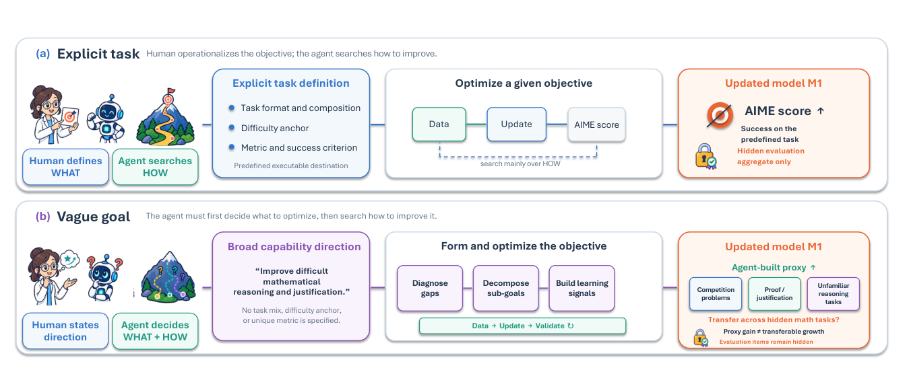
Figure 1 From explicit-task optimization to vague-goal-driven self-evolution. (a) With an explicit task definition, humans specify the task format and composition, difficulty anchor, metric, and success criterion, leaving the agent to search primarily over how to improve a fixed objective. (b) With only a broad capability direction, the agent must diagnose capability gaps, decompose sub-goals, construct learning and validation signals, and thereby decide what to optimize as well as how. Official evaluation items remain sealed; external evaluation tests whether gains on an agent-built proxy transfer to the intended capability.
reflect emerging capability gaps, humans must still discover new weaknesses, translate them into tasks, and design corresponding benchmarks and rewards. This leaves a central question for sustained recursive self-improvement:
反映新出现的能力缺口时，人类仍须发现新的弱点、将其转化为任务，并设计相应的基准与奖励。由此引出持续递归自我改进的一个核心问题：
Given only a vague goal and no agent-visible task specification or decomposable reward?
仅凭一个模糊目标，而在没有任何智能体可见的任务规范或可分解奖励的情况下？
We formalize this problem as vague-goal-driven self-evolution. As illustrated in Figure 1(b), “vague” does
我们将该问题形式化为模糊目标驱动的自我进化。如图 1(b) 所示，“模糊”并不
not mean ambiguous or poorly specified. It denotes a broad capability direction that has not yet been operationalized as a fixed task-level objective and evaluation metric. The agent must therefore diagnose capability gaps, form intermediate objectives, construct learning and validation signals, and jointly search over what to optimize and how to optimize it. This expanded decision space introduces a deeper failure mode: gains on an agent-constructed proxy may not translate into genuine improvements in the intended capability. Evaluating vague-goal-driven self-evolution therefore requires a goal-aligned external evaluator whose task-level specification and items remain hidden from the agent.
意味着含混不清或规定不良。它指代一种尚未被具体化为固定任务级目标与评估指标的宽泛能力方向。因此，智能体必须诊断能力差距、形成中间目标、构建学习与验证信号，并在“优化什么”与“如何优化”两个维度上联合搜索。这一扩展后的决策空间带来了一种更深层的失败模式：在智能体自建代理任务上的增益，未必能转化为目标能力的真实提升。因此，评估模糊目标驱动的自我进化需要一个与目标对齐的外部评估器，且其任务级规范和评估项须始终对智能体隐藏。
To study this problem, we introduce Aspire, a benchmark for vague-goal-driven self-evolution. Aspire provides only a natural-language capability goal while downstream evaluation tasks remain hidden. The agent decides how to operationalize the goal, including what data and update methods to use and whether and how to perform intermediate validation. Aspire supports evolution at two levels: model weights and the supporting agent harness. A unified agent-facing tool allows the agent to search for, download, import, or synthesize data; launch different forms of training; run self-evaluations; and manage candidate branches and selection. The controller handles data management, job scheduling, resource isolation, and checkpoint verification. Aspire records the resulting decisions, actions, and self-evaluation trajectories, and evaluates the resulting systems on a hidden, expert-authored set of 520 items spanning six goals across knowledge expansion and capability strengthening. Depending on the protocol, the agent receives either no intermediate evaluation score or only bounded aggregate scores; it never accesses evaluation items, reference answers, or per-item feedback.
为研究这一问题，我们提出 Aspire，一个模糊目标驱动自我进化基准。Aspire 仅提供一个自然语言能力目标，下游评估任务对其保持隐藏。由智能体决定如何将目标具体化，包括选用何种数据与更新方法、是否进行以及如何进行中间验证。Aspire 支持两个层面的进化：模型权重与配套的 agent harness。一个统一的面向智能体的工具支持智能体检索、下载、导入或合成数据，启动不同形式的训练，运行自评估，并管理候选分支与选择；控制器则负责数据管理、作业调度、资源隔离与检查点验证。Aspire 记录由此产生的决策、动作与自评估轨迹，并在一个隐藏的、由专家撰写的、覆盖知识扩展与能力强化两类共六项目标的 520 个评估项组成的评估集上评估最终系统。依据协议不同，智能体要么收不到任何中间评估分数，要么只能获得有界的聚合分数；它始终无法访问评估项、参考答案或逐项反馈。
We organize our experiments as a progression from controlled comparison to autonomous evolution. RQ1
我们的实验按照从受控比较到自主进化的递进关系组织。RQ1
isolates the effect of goal specification by replacing an explicit post-training task with a vague capability goal under matched starting models, update tools, and compute budgets. RQ2 then moves to the full Aspire setting and asks whether an agent starting from an instruction-tuned checkpoint can convert a vague goal into a retained weight-level capability gain. RQ3 holds model weights fixed and shifts the object of evolution
在起始模型、更新工具与计算预算匹配的条件下，用模糊能力目标替换显式的后训练任务，从而分离出目标规范方式本身的影响。RQ2 随后进入完整的 Aspire 设置，考察从一个指令微调检查点出发的智能体能否将模糊目标转化为可保留的权重层面能力增益。RQ3 则固定模型权重，将进化对象转向
to the supporting agent harness.转向配套的 agent harness。
RQ1: What changes when an explicit post-training task is replaced by a vague capability goal? Vague goals redirect search effort toward goal interpretation and operationalization and, in the evaluated settings, yield lower aggregate outcomes than the corresponding explicit-task references.
RQ1：用模糊能力目标替换显式后训练任务会带来什么变化？模糊目标会将搜索精力引向目标解读与具体化；在所评估的设置中，其总体结果低于相应的显式任务参考。
RQ2: Starting from an instruction-tuned checkpoint, can an LLM turn a vague goal into a retained capability gain through self-directed weight updates? Agents routinely complete data selection, training, and checkpoint generation, but above-base improvements on hidden evaluation data remain rare and are not reliably retained through continued search.
RQ2：从一个指令微调检查点出发，LLM 能否通过自导向的权重更新将模糊目标转化为可保留的能力增益？智能体通常能够完成数据选择、训练与检查点生成，但在隐藏评估数据上超过基座的改进依然罕见，且难以在后续搜索中被可靠保留。
RQ3: Beyond model weights, can the agent harness itself evolve? With model weights fixed, agents can generate functional successor harnesses for goal interpretation, tool use, and self-evaluation, but even the strongest observed successor remains below the engineered Qwen-Agent reference.
RQ3：在模型权重之外，agent harness 本身能否进化？在模型权重固定的条件下，智能体能够为目标解读、工具使用与自评估生成可用的后继 harness，但即便观测到的最强后继 harness，也仍不及工程化的 Qwen-Agent 参考实现。
Our contributions are threefold. First, we formalize target operationalization—the conversion of a broad capability goal into trainable objectives, learning signals, and validation criteria—as a missing axis of autonomous post-training. Second, we introduce a benchmark with sealed evaluation and a minimal interactive environment for both model-weight and harness updates. Third, we provide outcome-and-trajectory evidence revealing the gap between executing updates and retaining target-aligned improvements.
我们的贡献有三点。其一，我们将“目标具体化”——把宽泛能力目标转化为可训练目标、学习信号与验证标准的过程——形式化为自主后训练中长期缺失的一个维度。其二，我们提出一个采用密封评估的基准，以及一个同时支持模型权重与 harness 更新的最小交互环境。其三，我们提供结果与轨迹层面的证据，揭示“执行更新”与“保留目标对齐的改进”之间的差距。
2Background背景
Most agent benchmarks begin after the problem has already been made executable: the task is specified, the reward or judge is defined, and the execution scaffold is fixed. This setting is necessary for controlled comparison, but it hides the work that dominates real deployment. In industry, that work is distributed across several roles—including solutions architects, applied engineers, and platform engineers—but its most visible recent crystallization is the forward-deployed engineer (FDE), a title popularized by Palantir and since adopted by frontier-model companies [18, 19]. An FDE is embedded in the deployment environment and turns a general-purpose model into a system that works with a customer’s data formats, workflows, and operational constraints. The role’s success criterion is not a demonstration or a benchmark score, but whether the deployed system is genuinely used, continues to work, and improves in response to failures. The growth of FDE roles across frontier-model and data-platform companies reflects a simple fact: a capable model is not yet a working system [1, 23], and today the gap is largely closed by human engineers.
大多数智能体基准都始于问题被做成可执行之后：任务已规定，奖励或裁判已定义，执行脚手架已固定。这一设置对受控比较必不可少，却掩盖了真实部署中占主导地位的工作。在工业界，这类工作分布于多个角色——包括解决方案架构师、应用工程师与平台工程师——其近来最显著的具象形态是前线部署工程师（FDE）；该头衔由 Palantir 推广，随后被前沿模型公司广泛采用 [18, 19]。FDE 深入部署环境，将通用模型改造为能适配客户数据格式、工作流与运维约束的系统。衡量这一角色成功与否的标准并非一次演示或某个基准分数，而是部署的系统是否被真正使用、能否持续运转，并能否在失败中不断改进。FDE 岗位在前沿模型公司与数据平台公司中的增长折射出一个朴素的事实：能力强的模型尚不等于可用的系统 [1, 23]，而当前这一缺口主要依靠人类工程师弥合。
Viewed from the model’s side, FDE work supplies three pieces of structure that benchmark designers normally presuppose. First, the goal is vague: an informal deployment need must be translated into concrete objectives, constraints, and success criteria. Second, the feedback signal may be absent or unreliable: tests, judges, traces, or other validation mechanisms must be constructed before anyone can determine whether the system is improving. Third, the execution system may not exist in a usable form: the tools, context management, state, lifecycle logic, and verification interface through which future tasks will run must be built, adapted, and maintained as requirements change.
从模型一侧看，FDE 的工作提供了基准设计者通常默认存在的三种结构。其一，目标是模糊的：非正式的部署需求必须被翻译为具体的目标、约束与成功标准。其二，反馈信号可能缺失或不可靠：必须先构建测试、裁判、轨迹或其他验证机制，才能判断系统是否在改进。其三，执行系统未必以可用形式存在：未来任务赖以运行的工具、上下文管理、状态、生命周期逻辑与验证接口，必须随需求变化而构建、适配并持续维护。
Aspire focuses on the first layer and the capability-improvement process it initiates. When a deployment need specifies only a broad capability direction, can a model determine what it should learn, translate that direction into data, training plans, and validation signals, and achieve real capability growth by updating its model weights or agent harness? Whereas S3Gym studies whether interaction experience can be judged and reused under executable verification, and HarnessDev studies how models build and maintain the systems that carry them, Aspire isolates how broad deployment needs are translated into concrete learning objectives and realized as capability growth.
Aspire 聚焦于第一层以及它所引发的能力提升过程。当部署需求只给出一个宽泛的能力方向时，模型能否判断自己应当学什么，把这一方向转化为数据、训练计划与验证信号，并通过更新模型权重或 agent harness 实现真实的能力增长？S3Gym 研究交互经验能否在可执行验证下被判定与复用，HarnessDev 研究模型如何构建并维护承载自身的系统；Aspire 则隔离出这样一个问题：宽泛的部署需求如何被翻译为具体的学习目标，并最终落实为能力增长。
3Aspire: Self-Evolution Benchmark and Interactive EnvironmentAspire：自我进化基准与交互环境
Self-evolution can only be studied if progress remains externally measurable. Aspire therefore keeps an evaluator as controller-side scientific instrumentation while withholding its benchmark definition, items, and
只有当进展仍可从外部度量时，自我进化才能被研究。为此，Aspire 将评估器保留为控制器一侧的科学仪器，同时对其基准定义、评估项与
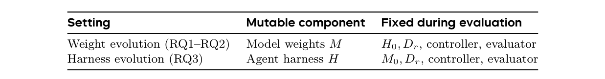
Table 1 Evolution surfaces in Aspire. The component under study changes while Dr, the controller, and the evaluator remain fixed within the round.
decomposable reward from the agent. Bounded aggregate outcomes approximate sparse deployment feedback without turning the evaluator into an agent-visible task specification or source of directly trainable supervision.
可分解奖励对智能体保密。有界的聚合结果近似于稀疏的部署反馈，同时避免把评估器变成智能体可见的任务规范或可直接用于训练监督的信号来源。
This section instantiates that setting through three components. We first define a bounded evolution episode and the model and harness surfaces on which it may operate (Section 3.1). We then present a hidden evaluation set spanning six goals (Section 3.2) and the minimal interactive environment through which an agent constructs, tests, and safely retains updates (Section 3.3). Experiment-specific feedback, eligibility, resource, and release accounting appears with the RQ2 results in Appendix C.
本节通过三个组件实例化该设置。我们首先定义有界的进化 episode 及其可操作的模型与 harness 两个层面（第 3.1 节）；随后给出覆盖六项目标的隐藏评估集（第 3.2 节），以及智能体借以构建、测试并安全保留更新的最小交互环境（第 3.3 节）。与实验相关的反馈、资格、资源与发布核算规则随 RQ2 结果在附录 C 中给出。
3.1Task Definition and Evolution Surfaces任务定义与进化面
Campaign and round. Let G ∈G denote a vague goal: a natural-language capability objective that does not specify a training task, dataset, or optimization procedure. Unlike an explicit-task setting, the agent must perform goal operationalization by translating G into its own data, update objective, and validation criteria. A campaign fixes the controller-side experiment contract
Campaign 与轮次。设 G ∈G 表示一个模糊目标：一个不指定训练任务、数据集或优化过程的自然语言能力目标。与显式任务设置不同，智能体必须执行目标具体化，将 G 转化为自身的数据、更新目标与验证标准。一个 campaign 固定控制器一侧的实验契约
Γ = (G, EG, J, A, B, Σ), Y inΓ = (G, EG, J, A, B, Σ), Y in
r = (Mr, Hr, Dr),r = (Mr, Hr, Dr),
where EG is the versioned evaluator bound to G, J is its judge when model-based scoring is required, A is the typed action contract, B is the campaign budget, and Σ is the predeclared terminal selection rule. The incoming state contains model weights Mr, an agent harness Hr (the runtime instructions, tool policy, workflow, memory, and validation logic around the model), and the decision model Dr that directs the search. The evaluator—including its items, answers, rubrics, routing metadata, and scoring configuration—exists throughout the campaign but is never part of the agent’s observation. RQ1 is the vague-goal counterpart of PostTrainBench: it preserves each original sealed task evaluator while replacing the explicit benchmark identifier with a broad capability description. These task-specific results remain separate from, and are not pooled with, the six-goal Aspire evaluation used in RQ2 and RQ3.
其中 EG 是绑定到 G 的带版本评估器，J 是需要模型打分时使用的裁判，A 是带类型的动作契约，B 是 campaign 预算，Σ 是预先声明的终结选择规则。输入状态包含模型权重 Mr、agent harness Hr（模型外围的运行时指令、工具策略、工作流、记忆与验证逻辑），以及指导搜索的决策模型 Dr。评估器——包括其评估项、答案、评分细则、路由元数据与打分配置——贯穿整个 campaign 存在，但从不进入智能体的观测。RQ1 是 PostTrainBench 的模糊目标版本：它保留每个原始密封任务评估器，仅将显式的基准标识符替换为宽泛的能力描述。这些任务特定的结果保持独立，不与 RQ2 和 RQ3 使用的六目标 Aspire 评估合并。
An evolution round is a bounded search-and-commit episode during which the decision model is fixed, rather than one tool call. Formally, Dr,j = Dr for every interaction step j in round r. Together with a fixed creator-side scaffold Cr, Dr interprets G and may propose multiple data operations, updates, validations, branches, and candidate states before termination. Different candidates therefore embody different goal operationalizations. After the round terminates, the controller may reuse Dr or explicitly promote a verified trained descendant. Writing Dr for the set of such descendants, the next-round choice obeys Dr+1 ∈{Dr}∪Dr; any handoff begins only in the subsequent round.
一个进化轮次是一个有界的“搜索—提交”episode，期间决策模型保持固定，而非单次工具调用。形式上，对轮次 r 中的每个交互步 j 都有 Dr,j = Dr。结合固定的创建侧脚手架 Cr，Dr 解读 G，并可在终止前提出多个数据操作、更新、验证、分支与候选状态。因此，不同候选对应不同的目标具体化方式。轮次终止后，控制器可以复用 Dr，或显式提升一个经过验证的训练后代。记 Dr 为此类后代的集合，则下一轮的选择满足 Dr+1 ∈{Dr}∪Dr；任何交接都只能从后续轮次开始。
Released interaction. Let Er,j be the private controller state before interaction step j. The agent receives only a released view qr,j containing the public history, lifecycle status, legal request types, approved identifiers, and a bounded projection of the remaining budget. At each step, Dr and Cr propose an action from the goal and released history, and the controller validates the request before updating its private state. Accepted requests create the corresponding durable transition; rejected requests return a typed error without creating an artifact or score. Detailed feedback is restricted to the agent’s own validation data; evaluation feedback follows the protocol-specific information boundary in Section 3.2.
发布式交互。设 Er,j 为交互步 j 之前的控制器私有状态。智能体仅接收发布视图 qr,j，其中包含公共历史、生命周期状态、合法请求类型、已批准的标识符以及剩余预算的有界投影。每一步中，Dr 与 Cr 依据目标和已发布历史提出一个动作，控制器先验证请求、再更新私有状态。被接受的请求创建相应的持久化状态转移；被拒绝的请求返回带类型的错误，不产生任何产物或分数。详细反馈仅限于智能体自己的验证数据；评估反馈则遵循第 3.2 节中各协议特定的信息边界。
Two evolution surfaces. Aspire separates the component being evolved from the policy directing the search. The two reported surfaces are
两个进化层面。Aspire 将被进化的组件与指导搜索的策略分离。我们报告的两个层面是
SM(H0, Dr) = {(M, H0, Dr) : M ∈M}, SH(M0, Dr) = {(M0, H, Dr) : H ∈H}.
SM(H0, Dr) = {(M, H0, Dr) : M ∈M}, SH(M0, Dr) = {(M0, H, Dr) : H ∈H}.
Every weight candidate records its parent checkpoint, registered data, update specification, and provenance for the agent’s own validation data. Every harness candidate records its parent version, content hash, and edit provenance. We use Self for the configuration in which the frozen base checkpoint acts as the decision model D0, while candidate updates descend from the same checkpoint M0. Promotion of a trained descendant is an explicit between-round operation and never an automatic within-round replacement.
每个权重候选都记录其父检查点、注册数据、更新规范，以及其自身验证数据的溯源信息；每个 harness 候选则记录其父版本、内容哈希与编辑溯源。Self 指冻结的基座检查点充当决策模型 D0、候选更新派生自同一检查点 M0 的配置。提升训练后代是显式的轮次间操作，绝不会发生在轮次内的自动替换中。
3.2A Hidden, Query-Limited Evaluation Set隐藏的、查询受限的评估集
This subsection describes the six-goal hidden evaluation used in RQ2 and RQ3; RQ1 instead uses the original sealed, task-specific PostTrainBench evaluators under a vague-goal contract, without pooling those results into Aspire.
本小节描述 RQ2 与 RQ3 所使用的六目标隐藏评估；RQ1 则在模糊目标契约下使用原始的密封、任务特定 PostTrainBench 评估器，且不将其结果并入 Aspire。
Measurement without an agent-visible benchmark. Learning from a vague goal cannot be evaluated without an external criterion of progress. Aspire therefore retains a benchmark on the controller side while hiding its task-level specification from the agent. The hidden evaluation set is scientific instrumentation, not an agent-visible learning contract: it lets researchers measure whether an agent-selected update improves the intended capability without disclosing which tasks define success. It contains 520 expert-authored evaluation items covering six vague goals; each goal is evaluated on its corresponding items, which the agent never sees, and the protocol returns no item-level result—only an aggregate score when feedback is permitted.
无智能体可见基准的测量。若缺乏外部进步标准，从模糊目标中学习便无从评估。因此，Aspire 在控制器一侧保留一个基准，同时向智能体隐藏其任务级规范。隐藏评估集是科学仪器，而非智能体可见的学习契约：它使研究者能够度量一次智能体选择的更新是否提升了目标能力，却不披露哪些任务定义了成功。该评估集包含 520 个由专家撰写的评估项，覆盖六项模糊目标；每个目标在其对应的评估项上进行评估，智能体始终看不到这些评估项，协议也不返回任何逐项结果——仅在允许反馈时返回一个聚合分数。
Items for six goals. The 520 items cover the six goals: scientific and academic reasoning (75 items); humanities and social-science knowledge (110); health and medical reasoning (100); mathematical reasoning (126); logic, reliability, and instruction following (89); and academic and scientific writing (20) (Figure 2). The fifth goal is intentionally composite; the current protocol does not claim to measure logical reasoning, hallucination resistance, and instruction following as three independently identifiable targets. Instead, it treats them as one integrated reliability objective. Each evaluation item belongs to exactly one goal, and each goal is scored and reported on its own evaluation slice rather than pooled into a single item-level score across all six goals. The writing items are 20 top-level task bundles that may yield multiple evaluator-scored responses, so RQ3 reports task-macro and example-micro aggregations separately.
六项目标的评估项。这 520 个评估项覆盖六项目标：科学与学术推理（75 项）；人文与社会科学知识（110 项）；健康与医学推理（100 项）；数学推理（126 项）；逻辑、可靠性与指令遵循（89 项）；以及学术与科学写作（20 项）（图 2）。第五项目标是有意设计的复合目标：当前协议并不声称把逻辑推理、抗幻觉与指令遵循作为三个可独立识别的目标分别测量，而是将其视为一个整体性的可靠性目标。每个评估项恰好属于一项目标，每项目标都在各自的评估切片上打分和报告，而非合并为横跨全部六项目标的单一逐项分数。写作类评估项是 20 个顶层任务包，可能产生多个由评估器打分的回答，因此 RQ3 分别报告 task-macro 与 example-micro 两种聚合。
Construction and quality control. Domain experts author every candidate item from scratch. GPQA [21], MMLU-Pro [24], and MedQA [15] serve only as references for task format, domain coverage, and approximate difficulty; no item from these benchmarks is copied, rewritten, or included. Each candidate retains authorship and revision provenance, a reference answer or fixed rubric, and a predefined scoring rule. Independent review removes incorrect, incomplete, underspecified, or unstably gradable items.
构建与质量控制。每个候选评估项均由领域专家从零撰写。GPQA [21]、MMLU-Pro [24] 与 MedQA [15] 仅作为任务格式、领域覆盖与近似难度的参考；这些基准中的任何评估项都不会被复制、改写或收录。每个候选都保留作者与修订溯源信息、参考答案或固定评分细则，以及预先定义的打分规则。独立评审负责移除不正确、不完整、规定不清或难以稳定评分的评估项。
Surviving candidates pass blind multi-model difficulty calibration, exact and semantic deduplication, overlap auditing against the reference benchmarks, scorer binding, and local end-to-end validation. Deterministic or structured scoring is used where possible; open-ended responses use a campaign-fixed rubric-based judge. The hidden evaluation set is bound to an immutable versioned manifest, and a running campaign never changes that version. Detailed screening, difficulty levels, overlap checks, scorer assignments, and versioning appear in Appendix A.1 and Appendix A.2.
存续的候选项还需通过盲态多模型难度校准、精确与语义去重、对照参考基准的重叠审计、打分器绑定以及本地端到端验证。凡可行之处均采用确定性或结构化打分；开放式回答则使用 campaign 固定的、基于评分细则的裁判。隐藏评估集绑定到不可变的版本化清单，运行中的 campaign 永不改变该版本。详细的筛查、难度级别、重叠检查、打分器分配与版本管理见附录 A.1 与附录 A.2。
Information boundary and interpretation. The agent receives a vague goal expressed in natural language and may construct its own training data and its own validation data. It cannot access hidden evaluation items, reference answers, routing labels, rubrics, candidate outputs, or judge traces. Every dataset registered for training is checked for overlap with the hidden evaluation set before admission to the training backend. Evaluation returns only the aggregate score permitted by the protocol and the remaining query allowance under a campaign-fixed evaluator and judge configuration.
信息边界与解读。智能体收到一个以自然语言表达的模糊目标，可以自行构建训练数据与验证数据，但无法访问隐藏评估项、参考答案、路由标签、评分细则、候选输出或裁判轨迹。每个注册用于训练的数据集，在准入训练后端之前都会先检查其与隐藏评估集的重叠情况。评估仅返回协议允许的聚合分数，以及在 campaign 固定的评估器与裁判配置下的剩余查询额度。
Under the adaptive-feedback protocol, a bounded number of queries may evaluate the same items for a goal. The resulting aggregate scores form a sparse black-box outcome channel: the agent may use them to choose subsequent updates, branches, or a stopping point, but does not observe the items and cannot train on their contents. This protocol therefore measures performance under bounded adaptive feedback rather than on
在自适应反馈协议下，有界数量的查询可以对同一目标重复评估相同的评估项。由此得到的聚合分数构成一个稀疏的黑盒结果通道：智能体可以据此选择后续的更新、分支或停止点，但观察不到评估项，也无法在其内容上训练。因此，该协议测量的是有界自适应反馈下的表现，而非在
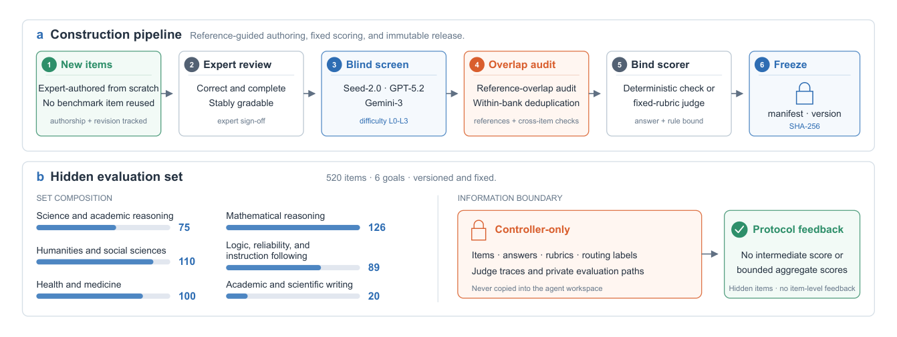
Figure 2 Construction and information boundary of the hidden evaluation set. Top: expert-authored candidates pass independent review, blind difficulty screening, overlap and duplication audits, scorer binding, and immutable versioning. Bottom: 520 evaluation items cover six goals. Items and judging assets remain controller-only; the protocol exposes no item-level results and only the aggregate scores it permits.
an untouched post-selection test. Under the final-only protocol, the agent may train multiple checkpoints but receives no evaluation score before submitting its single terminal checkpoint, so that score cannot guide further updates. In RQ3, the harness candidate is frozen before its first evaluation, and the resulting score is not returned to its creator.
一个未被触碰的选后测试集上的表现。在 final-only 协议下，智能体可以训练多个检查点，但在提交其唯一的终结检查点之前不会收到任何评估分数，因此该分数无法指导后续更新。在 RQ3 中，harness 候选在首次评估之前即被冻结，所得分数不会返回给其创建者。
We use out-of-distribution (OOD) operationally to describe evaluation items that are independently authored,
我们在操作层面使用分布外（OOD）一词，用以描述这样一些评估项：它们由独立撰写、
excluded from the agent’s training data and its own validation data, and evaluated outside the learning signals constructed by the agent. This does not assert that their marginal text distribution is disjoint from a model’s pretraining corpus. The protocol is designed to reduce direct content leakage and to test whether an agent can operationalize a vague goal from sparse outcome feedback while preserving an auditable separation between learning artifacts and measurement artifacts.
被排除在智能体的训练数据与自身验证数据之外，并在智能体构建的学习信号之外接受评估。这并不断言它们的边缘文本分布与模型的预训练语料不相交。该协议旨在减少直接的内容泄漏，并检验智能体能否在稀疏的结果反馈下将模糊目标具体化，同时在学习产物与测量产物之间保持可审计的分离。
3.3A Minimal Interactive Environment with Safe Retention支持安全保留的最小交互环境
Aspire retains controlled compute and real model updates while deliberately separating strategic and infrastructural complexity. The agent controls how to operationalize the given goal and how to update the model or harness; the controller absorbs credentials, storage conventions, distributed-job mechanics, and recovery. This keeps the interface simple without prescribing the learning strategy.
Aspire 保留受控的计算资源与真实的模型更新，同时有意将战略性复杂性与基础设施复杂性分离。智能体决定如何将给定目标具体化、如何更新模型或 harness；控制器则承接凭证、存储约定、分布式作业机制与故障恢复。由此既保持了接口的简洁，又不预设学习策略。
An agent-facing execution tool. The agent does not operate a shell, download a training repository, assemble a runtime, or implement distributed execution. Instead, Aspire exposes a single agent tool with typed, composable actions (Figure 3). Through tool calls, the agent can search for, download, or import public datasets; synthesize and register new data; launch supervised fine-tuning (SFT) or Group Relative Policy Optimization (GRPO) with low-rank adaptation (LoRA) or other permitted configurations; query job state; construct and run checks on its own validation data; and branch or stop a lineage. The agent still chooses the data, update method, parameters, and control flow, while the controller translates those choices into managed backend operations. This design minimizes incidental engineering work without removing the strategic decisions that self-evolution from a vague goal is intended to test.
一个面向智能体的执行工具。智能体无需操作 shell、下载训练仓库、组装运行时或实现分布式执行；Aspire 只暴露一个具有带类型、可组合动作的单一智能体工具（图 3）。通过工具调用，智能体可以检索、下载或导入公共数据集；合成并注册新数据；以低秩适应（LoRA）或其他允许的配置启动监督微调（SFT）或组相对策略优化（GRPO）；查询作业状态；在自己的验证数据上构建并运行检查；以及分支或终止一个谱系。数据、更新方法、参数与控制流仍由智能体选择，控制器则把这些选择翻译为受管理的后端操作。这一设计将附带的工程工作降至最低，同时保留了从模糊目标出发的自我进化所要考察的战略性决策。
Minimal actions and trust boundary. For weight evolution, the agent chooses data, update method, hy- perparameters, parent checkpoint, and whether to continue, branch, or stop. For harness evolution, it edits the runtime prompt, tool policy, workflow, memory, or validation procedure using its own data and freezes a versioned candidate. The interface exposes only semantic actions—registration, training or editing, verification, validation, evaluation, branching, and termination—while hiding backend mechanics. It preserves
最小动作与信任边界。对于权重进化，智能体选择数据、更新方法、超参数、父检查点，以及继续、分支还是停止。对于 harness 进化，它使用自己的数据编辑运行时提示、工具策略、工作流、记忆或验证流程，并冻结一个带版本的候选。接口只暴露语义动作——注册、训练或编辑、验证、确认、评估、分支与终止——同时隐藏后端机制。该接口保持
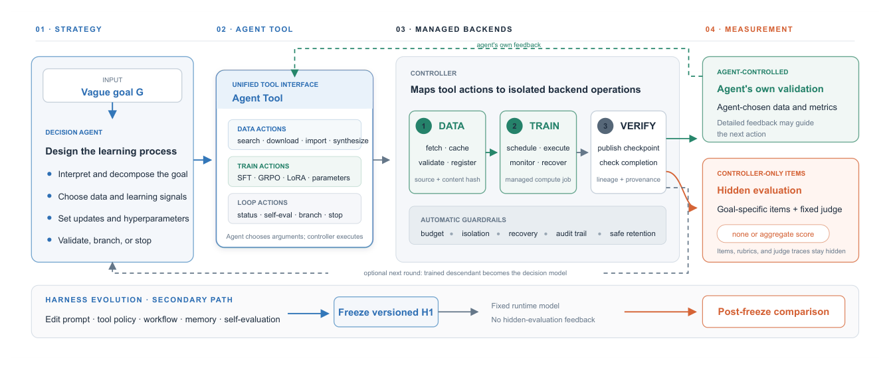
Figure 3 The minimal interactive environment and outcome protocols. Weight candidates follow a data–train–verify path, whereas harness candidates follow an edit–freeze path. A unified agent tool exposes composable data, training, status, and validation actions on the agent’s own data; the controller maps them to managed backends and enforces budget and lineage constraints. Evaluation returns only the aggregate outcome permitted by the protocol. Across rounds, the controller may reuse the current decision model or explicitly promote a verified trained descendant; any handoff begins only in the subsequent round.
the information boundary defined in Section 3.2: the agent makes strategic decisions, the controller executes and constrains them, and evaluation items remain hidden.
第 3.2 节定义的信息边界：智能体作出战略性决策，控制器执行并约束这些决策，评估项保持隐藏。
Verified candidates and auditable execution. A weight candidate is evaluable only after the controller verifies its parent, registered data, admitted update, and complete checkpoint publication. A harness candidate must be versioned and frozen before evaluation. Invalid, incomplete, foreign, or agent-invented artifacts cannot enter the scored lineage. Accepted actions record provenance, candidate lineage, resource use, aggregate submissions, and terminal selection. Full action schemas, recovery, and backend implementation details are part of the system artifact; the experiment-facing accounting rules appear in Appendix C.
经验证的候选与可审计的执行。权重候选只有在控制器验证了其父检查点、注册数据、被接受的更新以及检查点的完整发布之后，才可进入评估。harness 候选必须在评估前完成版本化并冻结。无效、不完整、外来或智能体凭空捏造的产物无法进入被打分的谱系。被接受的动作会记录溯源信息、候选谱系、资源使用、聚合提交与终结选择。完整的动作模式、恢复机制与后端实现细节属于系统工件；面向实验的核算规则见附录 C。
Candidate outcomes and safe retention. Let Y in be the incoming state and K the verified candidates produced in the round. For candidate k, we define the raw score change as
候选结果与安全保留。设 Y in 为输入状态，K 为该轮次产生的经验证候选。对候选 k，原始分数变化定义为
∆raw(k) = bsΓ(Y (k)) −bsΓ(Y in),∆raw(k) = bsΓ(Y (k)) −bsΓ(Y in),
which may be positive or negative. The best evaluated checkpoint is the highest-scoring evaluated checkpoint; the selected checkpoint is the highest-scoring eligible checkpoint under the campaign’s predeclared eligibility and completion rules. For score-gated weight evolution, the controller retains the selected checkpoint k⋆only when k⋆̸ = ⊥and ∆raw(k⋆) > 0; otherwise it rolls back to Y in. The resulting state Y out is therefore Y (k⋆) in the former case and Y in otherwise. Consequently,
它可正可负。最佳已评估检查点指分数最高的已评估检查点；被选检查点指在 campaign 预先声明的资格与完成规则下分数最高的合格检查点。对于分数门控的权重进化，仅当 k⋆̸ = ⊥且 ∆raw(k⋆) > 0 时，控制器才保留被选检查点 k⋆；否则回滚至 Y in。因此，所得状态 Y out 在前一种情况下为 Y (k⋆)，否则为 Y in。于是，
∆ret = bsΓ(Y out) −bsΓ(Y in) ≥0.
∆ret = bsΓ(Y out) −bsΓ(Y in) ≥0.
The nonnegative retained improvement follows from safety rollback and is therefore a selection outcome, not evidence that every attempted update improves capability. Harness candidates are instead compared post-freeze with model weights fixed; their effect may be negative and does not imply deployment or recursive handoff. Full eligibility, tie-breaking, termination, and aggregation rules for the reported experiments appear in Appendix C.1.
非负的保留改进源于安全回滚，因而是一种选择结果，而非“每次尝试的更新都能提升能力”的证据。harness 候选则在冻结后、模型权重固定的条件下进行比较；其效果可能为负，也不意味着部署或递归交接。所报告实验的完整资格、平局裁决、终止与聚合规则见附录 C.1。
4Experiments and Analysis实验与分析
We organize the experiments around the three questions introduced in Section 1. RQ1 asks how vague goals
我们围绕第 1 节提出的三个问题组织实验。RQ1 关注模糊目标会如何
change post-training outcomes and search trajectories relative to an explicit-task setting. RQ2 asks whether an LLM can turn a vague goal into a capability gain through weight updates. RQ3 asks whether the agent harness can itself evolve when runtime model weights are fixed. Together, the three studies move from characterizing the effect of goal specification, to evolving the model, and finally to evolving the system around it.
相对于显式任务设置改变后训练结果与搜索轨迹。RQ2 关注 LLM 能否通过权重更新将模糊目标转化为能力增益。RQ3 关注在运行时模型权重固定的情况下，agent harness 能否自身进化。三项研究依次递进：从刻画目标规范方式的影响，到进化模型本身，再到进化模型周围的系统。
4.1Setup实验设置
RQ1 changes goal specification and uses the original PostTrainBench evaluator. RQ2 uses two complementary protocols over six vague goals: the final-only protocol comprises 24 runs without intermediate evaluation scores, with two terminal runs per model–goal pair reported as their arithmetic mean (Avg@2); the adaptive-feedback protocol comprises 30 configuration–goal cells and tests feedback-guided checkpoint search. RQ3 changes the harness while fixing the runtime model and hidden evaluation set.
RQ1 改变目标规范方式，并使用原始的 PostTrainBench 评估器。RQ2 在六项模糊目标上采用两个互补协议：final-only 协议包含 24 次无中间评估分数的运行，每个模型—目标对报告两次终结运行并取算术平均（Avg@2）；自适应反馈协议包含 30 个配置—目标格子，用于测试反馈引导的检查点搜索。RQ3 在固定运行时模型与隐藏评估集的条件下改变 harness。
We report the two RQ2 protocols separately. In RQ3, three executions of each frozen harness measure runtime variation, not three independent evolution runs. Detailed budgets, evaluator settings, and outcome definitions appear in Appendix C.
我们分别报告 RQ2 的两个协议。在 RQ3 中，每个冻结 harness 的三次执行度量的是运行时波动，而非三次独立的进化运行。详细的预算、评估器设置与结果定义见附录 C。
4.2RQ1: How Vague Goals Change Post-TrainingRQ1：模糊目标如何改变后训练
Question. How do vague goals change post-training outcomes and search trajectories relative to an explicit- task setting?
问题。相对于显式任务设置，模糊目标如何改变后训练结果与搜索轨迹？
Setting. Standard PostTrainBench names the downstream benchmark, thereby specifying what the agent should optimize. We replace that identifier with a broad capability description while preserving the post- training interface and original task evaluator. The resulting agent must choose, explicitly or implicitly, a concrete goal, a proxy training task, and a validation method in addition to the update itself. We use the released PostTrainBench scores as a reference and matched Claude Opus 4.8 trajectories under explicit-task and vague-goal contracts only for process comparisons. Other run metadata can also differ, so the results below describe the observed difference rather than isolate a prompt-only causal effect. Tasks, models, and pairing criteria are given in Appendix B.
设置。标准 PostTrainBench 会点名下游基准，从而规定智能体应当优化什么。我们在保持后训练接口与原始任务评估器不变的前提下，将该标识符替换为一段宽泛的能力描述。由此得到的智能体必须在更新本身之外，显式或隐式地选择一个具体目标、一个代理训练任务与一种验证方法。我们以已发布的 PostTrainBench 分数为参考，且仅在过程比较中使用显式任务与模糊目标两种契约下相匹配的 Claude Opus 4.8 轨迹。其他运行元数据也可能存在差异，因此下文结果描述的是观测到的差异，并未分离出仅由提示造成的因果效应。任务、模型与配对标准见附录 B。
Main result: vague-goal final scores are lower overall, but task-level changes vary. Figure 4(a) shows that Claude Opus 4.8 under vague-goal prompting reaches 27.07, compared with the 32.90 official Claude Opus 4.8 Max reference from PostTrainBench; GPT-5.6 reaches 29.58, compared with the 36.23 official GPT-5.6 reference. Yet the task-level pattern varies: Claude Opus 4.8 under vague-goal prompting is higher on HumanEval and BFCL, and GPT-5.6 under vague-goal prompting is higher on GSM8K. We therefore interpret the aggregate gaps without assuming uniform task-level degradation.
主要结果：模糊目标的最终分数总体更低，但任务层面的变化并不一致。图 4(a) 显示，模糊目标提示下的 Claude Opus 4.8 达到 27.07，而 PostTrainBench 官方 Claude Opus 4.8 Max 参考为 32.90；GPT-5.6 达到 29.58，而官方 GPT-5.6 参考为 36.23。但任务层面的模式并不一致：模糊目标提示下的 Claude Opus 4.8 在 HumanEval 与 BFCL 上更高，模糊目标提示下的 GPT-5.6 则在 GSM8K 上更高。因此我们在解读总体差距时，不假设任务层面出现了普遍退化。
Trajectory pattern 1: vague goals are associated with different resource use. In the matched Claude Opus 4.8 runs, vague-goal trajectories record 2,109 more seconds of decision-model thinking and 0.61 more GPU-idle hours per matched run pair, while active training and evaluation time falls by 1.27 hours (Figure 4(b)). Accesses to agent-visible task materials and proxy evaluation scripts become 2.98× and 2.39× as dense. In a separate trace-level sample spanning the six shared settings, the mean number of tool actions does not increase (188.5 to 179.2), while LoRA is used more often under vague goals. These descriptive shifts are consistent with more goal-operationalization work and less active update time, but do not establish that one displaces the other or identify which choice causes the final score gap.
轨迹模式 1：模糊目标对应着不同的资源使用。在匹配的 Claude Opus 4.8 运行中，每个匹配运行对里，模糊目标轨迹记录的决策模型思考时间多 2,109 秒、GPU 空闲时间多 0.61 小时，而主动训练与评估时间减少 1.27 小时（图 4(b)）。对智能体可见任务材料与代理评估脚本的访问密度分别变为 2.98× 与 2.39×。在一个覆盖六个共享设置的独立轨迹级样本中，工具动作的平均次数并未增加（从 188.5 到 179.2），而模糊目标下 LoRA 的使用更为频繁。这些描述性变化与“更多的目标具体化工作、更少的主动更新时间”相一致，但既不能确立一方替代了另一方，也无法识别哪个选择造成了最终分数差距。
Reference comparison: strong explicit-task systems use different search profiles. Claude Opus 4.8 under vague-goal prompting performs 3.54 evaluations for 6.17 training starts, or 0.57 evaluations per start. Official GPT-5.6 performs 39.21 evaluations for 14.91 starts, or 2.63 per start—4.6× the feedback density (Figure 4(c)), providing more opportunities to test, reject, and branch from updates. Official Claude Opus 4.8 Max follows a different profile: its 2.89 evaluations and 5.14 training starts yield 0.56 evaluations per start, nearly identical
参考比较：强显式任务系统呈现出不同的搜索画像。模糊目标提示下的 Claude Opus 4.8 以 6.17 次训练启动进行 3.54 次评估，即每次启动 0.57 次评估；官方 GPT-5.6 以 14.91 次启动进行 39.21 次评估，即每次启动 2.63 次——反馈密度为前者的 4.6×（图 4(c)），为测试、拒绝更新及从更新中分支提供了更多机会。官方 Claude Opus 4.8 Max 则呈现另一种画像：其 2.89 次评估与 5.14 次训练启动得出每次启动 0.56 次评估，与模糊目标提示下的 Claude Opus 4.8 几乎相同，
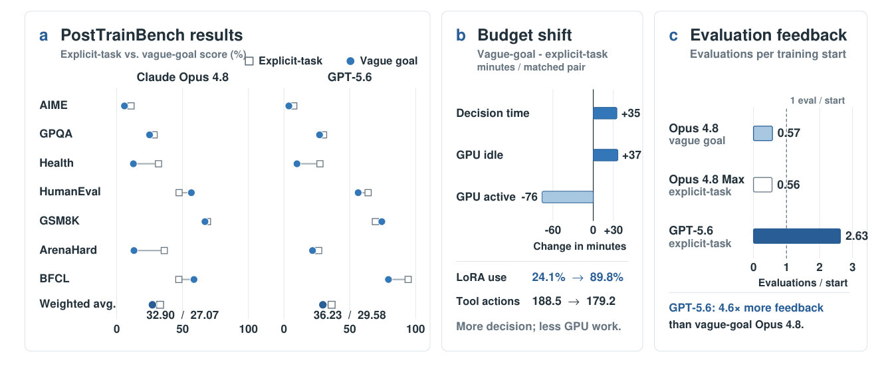
Figure 4 RQ1 final-score and trajectory comparison. (a) Official PostTrainBench references for Claude Opus 4.8 Max and GPT-5.6, alongside vague-goal scores across seven benchmarks. (b) Within matched Claude Opus 4.8 pairs, vague-goal trajectories show more decision and GPU-idle time and less active GPU work. (c) Claude Opus 4.8 under vague-goal prompting obtains less evaluation feedback per training start than official GPT-5.6, while official Claude Opus 4.8 Max has nearly the same feedback density. Panel (c) is a descriptive cross-system reference, not a matched prompt effect. Exact values and accounting appear in Appendix B.
to Claude Opus 4.8 under vague-goal prompting, but it records 165,851 thinking characters versus 30,895 for official GPT-5.6. These cross-system statistics describe two strong explicit-task profiles rather than isolate goal vagueness: dense evaluation feedback for official GPT-5.6 and much larger recorded reasoning volume for official Claude Opus 4.8 Max.
但这些跨系统统计描述的是两个强显式任务系统的画像，而非隔离出目标模糊性带来的影响：官方 GPT-5.6 拥有密集的评估反馈，官方 Claude Opus 4.8 Max 则记录了远为庞大的推理量（165,851 个思考字符对 30,895 个）。
Answer to RQ1. Relative to explicit-task references, vague goals expand the search from how to optimize to what to optimize and how. In the matched Claude Opus 4.8 runs, vague goals are associated with more goal-operationalization work and less active update time, while their aggregate scores remain below the explicit-task references.
对 RQ1 的回答。相对于显式任务参考，模糊目标把搜索空间从“如何优化”扩展到“优化什么与如何优化”。在匹配的 Claude Opus 4.8 运行中，模糊目标对应更多的目标具体化工作与更少的主动更新时间，且其总体分数仍低于显式任务参考。
4.3RQ2: Self-Directed Weight Evolution from Vague GoalsRQ2：从模糊目标出发的自导向权重进化
Question. Starting from an instruction-tuned checkpoint, can an LLM given only a vague goal determine what to learn and improve its capability by directing iterative updates to that checkpoint? This starting point more closely reflects practical self-evolution, where a generally useful model must improve itself while preserving behavior acquired through instruction tuning.
问题。从一个指令微调检查点出发，只给定一个模糊目标的 LLM 能否决定学什么，并通过对该检查点的迭代更新提升自身能力？这一起点更贴近实际的自我进化场景：一个通用可用的模型必须在保留指令微调所习得行为的同时实现自我改进。
Settings. Unlike RQ1, which adapts pretrained models, both RQ2 settings begin from instruction-tuned checkpoints and allow iterative training. We call each initial instruction-tuned checkpoint the base model and its initial evaluation score the base score. This is a practically important setting: an update should add goal-relevant behavior without disrupting useful behavior already encoded by instruction tuning. The final-only protocol tests open-loop execution, whereas the adaptive-feedback protocol tests search with sparse aggregate scores. Although the system can promote a trained descendant to the decision model in a subsequent round, all reported runs keep the initial decision model fixed; the evidence therefore concerns adaptive weight search rather than recursive decision-model replacement. In both protocols, evaluation focuses on one goal and does not measure preservation of every unrelated capability.
设置。与适配预训练模型的 RQ1 不同，RQ2 的两个设置均从指令微调检查点出发，并允许迭代训练。我们将每个初始指令微调检查点称为基座模型，其初始评估分数称为基座分数。这是一个具有重要实践意义的设置：一次更新应当在不破坏指令微调已编码的有用行为的前提下，添加与目标相关的行为。final-only 协议测试开环执行，自适应反馈协议则测试利用稀疏聚合分数的搜索。尽管系统可以在后续轮次将训练后代提升为决策模型，所有报告的运行都保持初始决策模型固定；因此此处的证据针对的是自适应权重搜索，而非递归的决策模型替换。在两个协议中，评估均聚焦单一目标，且不测量无关能力的保持情况。
Final-only protocol. Qwen3.5-4B Self and Qwen3.5-9B Self each optimize all six goals in two separately executed terminal runs, yielding 24 runs in total. For each model–goal pair, we report Avg@2—the arithmetic
final-only 协议。Qwen3.5-4B Self 与 Qwen3.5-9B Self 各自在两次独立执行的终结运行中优化全部六项目标，共计 24 次运行。对每个模型—目标对，我们报告 Avg@2——即两个最终检查点分数的算术
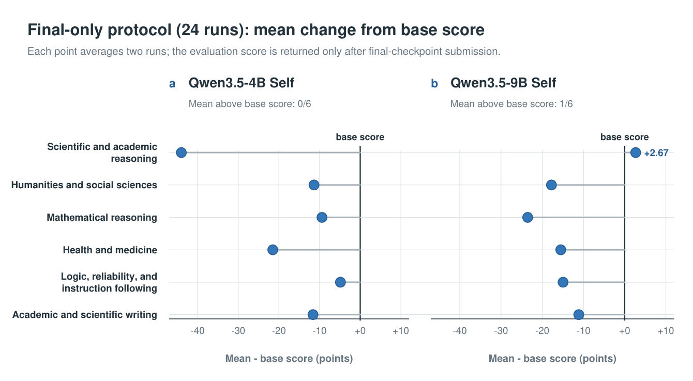
Figure 5 Final-only mean change from the base score before rollback. Each point is the arithmetic mean of two separately executed terminal runs for one model–goal pair. Scientific and academic reasoning with Qwen3.5-9B is the only two-run mean above its base score. Constituent run scores appear in Appendix C.3.
mean of the two final-checkpoint scores—rather than best-of-two. A run may launch multiple training jobs within 40 GPU-hours, but it may submit only one final checkpoint for evaluation on the hidden evaluation set. The two-run repetition makes the final estimate less dependent on any single run. This protocol does not isolate decision-model scale because the decision model, the base model, and the base score change together between 4B and 9B.
平均——而非两次中的最优。一次运行可以在 40 GPU 小时内启动多个训练作业，但只能提交一个最终检查点用于在隐藏评估集上评估。两次运行的重复降低了最终估计对任何单次运行的依赖。该协议无法分离决策模型规模的影响，因为决策模型、基座模型与基座分数在 4B 与 9B 之间是同时变化的。
Final-only result: only one two-run mean exceeds the base score. All 24 final-only runs complete their single final-checkpoint evaluation (Figure 5). Taking each model–goal pair as the reporting unit, Qwen3.5-4B has 0/6 mean outcomes above its base score and Qwen3.5-9B has 1/6. The sole positive pair is scientific and academic reasoning: both runs rise from 45.33 to 48.00, so the two-run mean is 48.00, or 2.67 points above the base score. At the pair level, this is the only positive mean among all 12 model–goal pairs. At the individual-run level, 3/24 final checkpoints exceed their base scores, while rollback retains the base model in the other 21 runs. Individual terminal-run and per-goal results appear in Appendix C.3.
final-only 结果：仅有一个两次运行均值超过基座分数。全部 24 次 final-only 运行都完成了其单一最终检查点的评估（图 5）。以模型—目标对为报告单位，Qwen3.5-4B 有 0/6 个均值结果高于其基座分数，Qwen3.5-9B 有 1/6。唯一的正向对是科学与学术推理：两次运行都从 45.33 升至 48.00，故两次运行均值为 48.00，高出基座分数 2.67 分。在配对层面，这是全部 12 个模型—目标对中唯一的正向均值。在单次运行层面，3/24 个最终检查点超过其基座分数，其余 21 次运行通过回滚保留了基座模型。单次终结运行与逐目标结果见附录 C.3。
Adaptive-feedback protocol. The adaptive-feedback protocol asks whether sparse aggregate evaluation scores can guide an improving multi-checkpoint trajectory. The decision model chooses public data, an update method, a training plan, and when to evaluate or branch in response to the scores observed so far. In the Self settings, the initial Qwen3.5-4B or Qwen3.5-9B checkpoint remains the fixed decision model while descendant checkpoints are trained. GPT-5.6 Luna, Terra, and Sol serve as external decision models for the same Qwen3.5-4B base model. Eligible checkpoints may receive repeated aggregate scores on the hidden evaluation items for a goal, but the agent never sees the items or per-item feedback.
自适应反馈协议。该协议考察稀疏的聚合评估分数能否引导出一条持续改进的多检查点轨迹。决策模型依据迄今观测到的分数，选择公共数据、更新方法、训练计划，以及何时评估或分支。在 Self 设置中，初始的 Qwen3.5-4B 或 Qwen3.5-9B 检查点保持为固定决策模型，同时训练后代检查点。GPT-5.6 Luna、Terra 与 Sol 则充当同一 Qwen3.5-4B 基座模型的外部决策模型。合格检查点可以在某项目标的隐藏评估项上反复获得聚合分数，但智能体始终看不到这些评估项或逐项反馈。
Adaptive-search result: producing a trained checkpoint is common; producing an above-base goal score is rare. Across the 30 configuration–goal cells, with one run per configuration–goal cell, 28 produce an evaluated checkpoint and 21 satisfy the predeclared provenance, exploration, completion, and terminal-record requirements for an eligible checkpoint (Figures 6 and 7(a)). Only two cells have a best evaluated checkpoint whose score exceeds the base score. Qwen3.5-4B Self raises science from 44.00 to 45.33, but no Self cell
自适应搜索结果：产出训练检查点很常见，产出高于基座的目标分数则很罕见。在 30 个配置—目标格子中（每格一次运行），28 个产出了已评估检查点，21 个满足预先声明的溯源、探索、完成与终结记录要求，从而拥有合格检查点（图 6 与图 7(a)）。只有两个格子的最佳已评估检查点分数超过基座分数。Qwen3.5-4B Self 将科学从 44.00 提升至 45.33，但没有任何 Self 格子
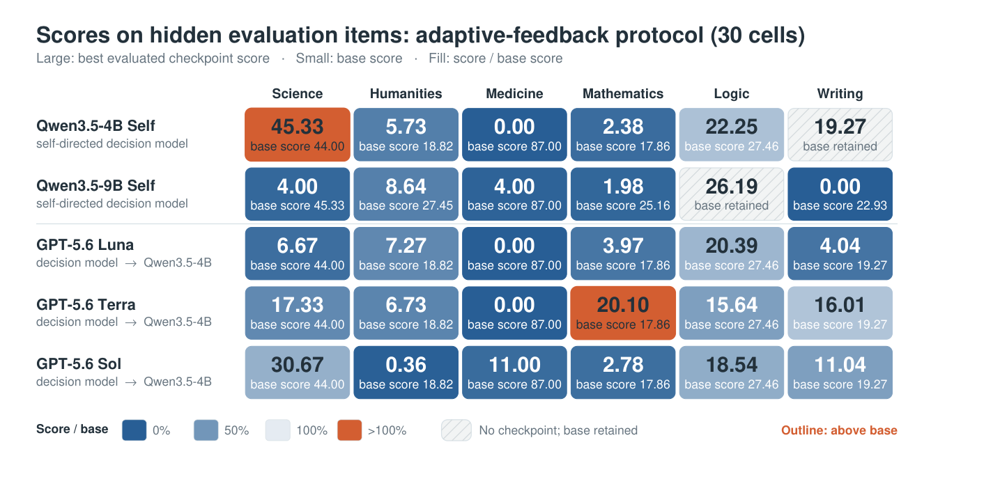
Figure 6 Scores on the hidden evaluation set for all 30 adaptive-feedback configuration–goal cells: two Self configurations and three external decision-model settings. Large values are the scores of the best evaluated checkpoints; small values give the base score. The two cells without an evaluated checkpoint show the fallback base score for accounting but are hatched and labeled as having no checkpoint. For evaluated cells, color encodes the best evaluated checkpoint score divided by the base score. Printed values preserve the original score scale.
retains a model above its base score; Terra raises Qwen3.5-4B mathematics from 17.86 to 20.10 and is the only cell whose checkpoint scores above the base score, passes eligibility, and remains after rollback. Thus the agents often close the executable training loop—data, update, checkpoint, and evaluation—but most resulting checkpoints do not preserve the base score. The 45.33 science score is a best evaluated checkpoint from one adaptive-feedback run and is not reproduced by the two final-only Qwen3.5-4B final checkpoints. Because feedback and checkpoint-selection contracts differ, we treat the protocols as complementary settings rather than repeated trials. The retained Terra score was selected using repeated aggregate feedback on the same fixed evaluation slice; without a separate confirmation slice, it is evidence of feedback-guided selection rather than an independently replicated capability gain.
保留了高于其基座分数的模型；Terra 将 Qwen3.5-4B 的数学从 17.86 提升至 20.10，并且是唯一一个检查点分数高于基座分数、通过资格审核且在回滚后仍得以保留的格子。由此可见，智能体经常能闭合可执行的训练回路——数据、更新、检查点与评估——但大多数由此得到的检查点未能保持基座分数。45.33 的科学分数来自一次自适应反馈运行的最佳已评估检查点，且未被两次 final-only Qwen3.5-4B 最终检查点复现。由于反馈与检查点选择契约不同，我们将两种协议视为互补设置，而非重复试验。被保留的 Terra 分数是在同一固定评估切片上利用重复聚合反馈选出的；由于缺乏单独的确认切片，它只能作为反馈引导选择的证据，而非独立复现的能力增益。
Trajectory pattern 1: apparent progress can be recovery from training-induced regression. The 22 cells with multiple evaluated checkpoints contain 62 consecutive transitions: 28 rise, 13 tie, and 21 fall. Later search beats the first evaluated checkpoint in 14/22 cells, but this does not imply a score above the base score. For example, Qwen3.5-4B Self improves on mathematics from 0.79 to 1.75 to 2.38 while remaining far below its 17.86 base score (Figure 7(c)). A positive within-lineage slope can therefore describe recovery from training-induced regression rather than an above-base improvement. The transition counts are pooled descriptive statistics because cells contribute different numbers of checkpoints.
轨迹模式 1：表面上的进步可能是对训练所致退化的恢复。拥有多个已评估检查点的 22 个格子共包含 62 次连续转移：28 次上升、13 次持平、21 次下降。在 14/22 个格子中，后续搜索优于第一个已评估检查点，但这并不意味着分数高于基座分数。例如，Qwen3.5-4B Self 在数学上从 0.79 升至 1.75 再到 2.38，却仍远低于其 17.86 的基座分数（图 7(c)）。因此，谱系内的正向斜率可能描述的是对训练所致退化的恢复，而非超过基座的改进。由于各格子贡献的检查点数量不同，这些转移计数只是合并后的描述性统计。
Trajectory pattern 2: more search does not mean better search. Using the same Qwen3.5-4B base model, the external decision models produce different goal-level outcomes. Among their best evaluated checkpoints, Luna is highest on humanities (7.27) and logic (20.39), Terra on mathematics (20.10) and writing (16.01), and Sol on science (30.67) and medicine (11.00). In five of six goals, even the highest of these scores remains below the base score. Sol searches most broadly, producing 33 evaluated checkpoints with 76.56 settled training GPU-hours, yet none exceeds its corresponding base score. Terra finds the sole retained improvement on the adaptive selection slice; its later mathematics descendants fall from 20.10 to 2.78 before recovering to 18.17. Greater search volume therefore does not ensure an above-base score, and continued optimization
轨迹模式 2：更多搜索不等于更好的搜索。使用同一个 Qwen3.5-4B 基座模型，外部决策模型产生了不同的目标层面结果。在它们的最佳已评估检查点中，Luna 在人文学科（7.27）与逻辑（20.39）上最高，Terra 在数学（20.10）与写作（16.01）上最高，Sol 在科学（30.67）与医学（11.00）上最高。在六项目标中的五项上，即便其中最高者也仍低于基座分数。Sol 搜索得最广，产出 33 个已评估检查点、消耗 76.56 个已结算训练 GPU 小时，却没有一个超过其对应的基座分数。Terra 找到了自适应选择切片上唯一被保留的改进；其后续数学后代从 20.10 跌至 2.78，随后恢复到 18.17。因此，更大的搜索量并不能保证获得高于基座的分数，而持续的优化
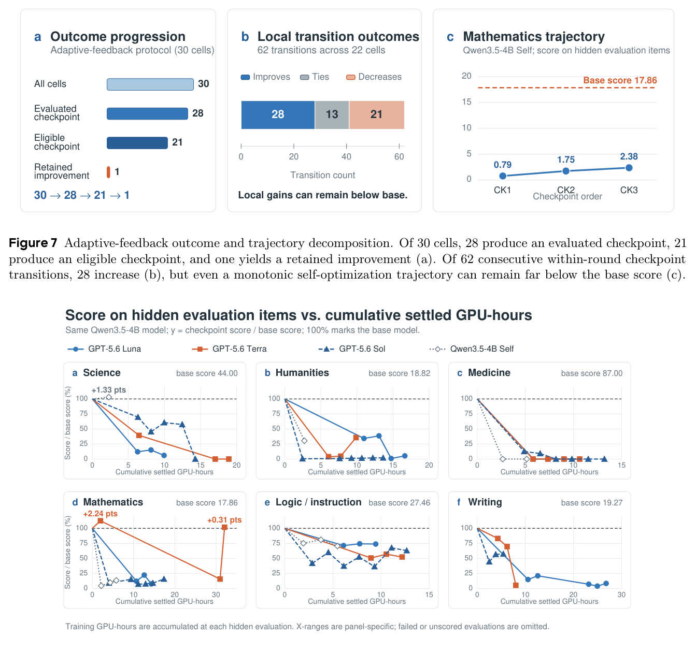
Figure 7 Adaptive-feedback outcome and trajectory decomposition. Of 30 cells, 28 produce an evaluated checkpoint, 21 produce an eligible checkpoint, and one yields a retained improvement (a). Of 62 consecutive within-round checkpoint transitions, 28 increase (b), but even a monotonic self-optimization trajectory can remain far below the base score (c).
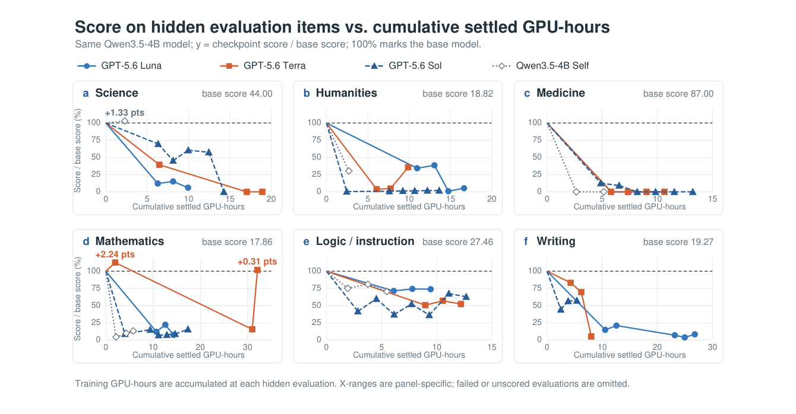
Figure 8 Adaptive-feedback score–compute trajectories for four configurations using the same Qwen3.5-4B base model. Scores are normalized to each goal’s base score, and curves connect evaluated checkpoints by settled training GPU-hours.
can induce regression rather than produce a better descendant, making checkpoint selection and rollback necessary (Figure 8).
可能诱发退化而非产出更好的后代，这使得检查点选择与回滚成为必要（图 8）。
In the final-only protocol, three runs continue for 16–20 training jobs and consume 26.570–32.286 GPU-hours, yet their submitted final checkpoints score only 0.159 on 4B mathematics, 2.540 on 9B mathematics, and 0 on 9B writing. Because intermediate checkpoints are not evaluated under this protocol, these trajectories do not establish monotonic degradation or identify the best earlier checkpoint; they show that blind continuation along a latest-checkpoint lineage can end in a poor final checkpoint.
在 final-only 协议中，三次运行持续执行了 16–20 个训练作业并消耗 26.570–32.286 GPU 小时，但其提交的最终检查点仅得到 4B 数学 0.159、9B 数学 2.540、9B 写作 0 的分数。由于该协议不评估中间检查点，这些轨迹既不能确立单调退化，也无法识别更早的最佳检查点；它们只能表明，沿最新检查点谱系盲目前进可能以一个糟糕的最终检查点收场。
Observed failure mode: numeric-label SFT is associated with answer-format collapse. The Self trajectories show concentration in both domain and answer format. In the adaptive-feedback protocol, Qwen3.5-4B Self
观测到的失败模式：数字标签 SFT 与答案格式坍塌相关联。Self 轨迹在领域与答案格式两个维度上均表现出聚集。在自适应反馈协议中，Qwen3.5-4B Self
uses GSM8K or Hendrycks mathematics data in 30/32 dataset-import events, including runs targeting science, logic, and writing. In the final-only protocol, five submitted checkpoints are trained on numeric-label MMLU SFT: all 21,000 training targets are single-digit labels, and all 279 corresponding evaluation outputs are single digits. Their scores are 0, 0, 0, 6.141, and 0. All five checkpoints show the same pattern. This is not a randomized causal comparison, but it documents a concrete answer-format mismatch associated with training-induced regression. Because all 24 final evaluations complete without item errors, missing outputs or evaluator failures do not explain the aggregate degradation. Further accounting appears in Appendix C.3; content-dependent interpretations use the controlled-access source traces.
在 30/32 次数据集导入事件中使用了 GSM8K 或 Hendrycks 数学数据，其中包括以科学、逻辑和写作为目标的运行。在 final-only 协议中，五个提交的检查点在数字标签 MMLU SFT 数据上训练：全部 21,000 个训练目标均为个位数标签，全部 279 个对应评估输出也均为个位数，其分数分别为 0、0、0、6.141 和 0。全部五个检查点呈现同一模式。这并非随机化的因果比较，但它记录了一种与训练所致退化相关联的具体答案格式错配。由于全部 24 次最终评估均在无评估项错误的情况下完成，缺失输出或评估器故障无法解释总体退化。进一步核算见附录 C.3；依赖内容的解读使用受控访问的原始轨迹。
Answer to RQ2. We observe isolated above-base goal scores rather than reliable improvement. Only one of 12 final-only Avg@2 outcomes exceeds its base score, and adaptive feedback often produces locally rising trajectories that remain below base. Agents therefore complete the update loop more consistently than they preserve base performance; these goal-specific evaluations do not measure unrelated capabilities.
对 RQ2 的回答。我们观察到的是孤立的高于基座的目标分数，而非可靠的改进。12 个 final-only Avg@2 结果中仅有一个超过其基座分数，而自适应反馈常常产生仍低于基座的局部上升轨迹。可见，智能体完成更新回路的稳定性高于其保持基座性能的稳定性；且这些目标特定的评估并不测量无关能力。
4.4RQ3: Harness EvolutionRQ3：harness 进化
Question. With model weights held fixed, can one-step harness evolution improve the agent’s research performance for the academic and scientific writing goal?
问题。在模型权重固定的条件下，一步式 harness 进化能否提升智能体在学术与科学写作目标上的研究表现？
Design. We fix Qwen3.5-4B as the runtime model and use the original Qwen-Agent as the reference harness. Under the same editable contract, Qwen3.5-4B Creator and GPT-5.6 Luna, Terra, and Sol each attempt to produce one successor harness H1 from the same H0. The Qwen3.5-4B Creator produces no valid H1 and is assigned zero by the predeclared failure rule. Each of the three valid successors is frozen and executed three times on the same 20 hidden evaluation items for the academic and scientific writing goal; those scores are not returned to the creator. There is one creation trajectory per condition, while the three executions measure runtime variation of a frozen harness. No run evolves H1 into H2, so the experiment evaluates one-step harness generation rather than recursive harness self-improvement.
设计。我们固定 Qwen3.5-4B 作为运行时模型，并使用原始 Qwen-Agent 作为参考 harness。在相同的可编辑契约下，Qwen3.5-4B Creator 与 GPT-5.6 Luna、Terra、Sol 各自尝试从同一个 H0 产出一个后继 harness H1。Qwen3.5-4B Creator 未产出有效的 H1，并按预先声明的失败规则被记为零分。三个有效后继各自被冻结，并在学术与科学写作目标的同一批 20 个隐藏评估项上执行三次；这些分数不会返回给创建者。每个条件只有一条创建轨迹，三次执行度量的只是冻结 harness 的运行时波动。没有任何运行将 H1 进化为 H2，因此该实验评估的是一步式 harness 生成，而非递归的 harness 自我改进。
Result: the closest successor harness is numerically below the fixed reference. All three valid successors are numerically below the original Qwen-Agent, which obtains 28.64 task macro and 27.65 example micro (Table 2). The Sol-created successor is closest at 27.22/25.97, 1.42 task-macro points below the reference,
结果：最接近的后继 harness 在数值上仍低于固定参考。全部三个有效后继在数值上都低于原始 Qwen-Agent，后者获得 28.64 task macro 与 27.65 example micro（表 2）。Sol 创建的后继最接近，为 27.22/25.97，低于参考 1.42 个 task-macro 点；
followed by the Terra-created successor at 20.76/20.14 and the Luna-created successor at 19.32/18.33.
其次是 Terra 创建的后继 20.76/20.14，以及 Luna 创建的后继 19.32/18.33。
Trajectory pattern 1: narrow agent validation can specialize the harness to the wrong proxy. Luna raises one creator-designed eight-item checklist on the agent’s own validation data from 7/8 to 8/8 by adding a fixed five-part research-answer template. After two similarly structured prompts also score 8/8, it stops after approximately 40 minutes. The template makes answers more explicit about bias and limitations, but inspection of hidden evaluation items shows that it can recast requests for mechanisms, formulas, parameters, or engineering details as study-design problems. The validation gain and the 19.32 task-macro mean on the hidden evaluation set are therefore consistent with specialization to a narrow proxy rather than broad improvement.
轨迹模式 1：狭隘的智能体验证可能使 harness 特化到错误的代理任务上。Luna 通过添加一个固定的五段式研究回答模板，将自己在自身验证数据上设计的一个八项清单从 7/8 提升到 8/8。在两个结构相似的提示也得到 8/8 之后，它在约 40 分钟后停止。该模板使回答对偏差与局限的表述更为明确，但对隐藏评估项的检查表明，它可能把对机制、公式、参数或工程细节的提问改写为研究设计类问题。因此，该验证收益与其在隐藏评估集上 19.32 的 task-macro 均值，与“特化到狭隘代理任务而非广泛改进”的解释相一致。
Trajectory pattern 2: answer review does not guarantee output integrity. Terra correctly rejects a two-pass reviewer after it invents unsupported significance results and effect sizes, but its final harness retains a different failure path: after a calculator call, an empty final model response causes the pre-tool partial draft to be submitted. This occurs on two items in one inspected execution and accounts arithmetically for approximately 70% of that execution’s aggregate decline. Sol searches for 3 hours 11 minutes across four task types in its own validation data and several prompt and tool variants, rejecting alternatives with hallucination, latency, or tool-control failures even when their validation scores are higher. Its final edit only checks that the last model response is complete and nonempty; the check does not trigger on any of the 20 inspected evaluation items. It therefore improves failure handling, but the trace does not show that it causes a task-accuracy gain. Detailed cases appear in Appendix D.
轨迹模式 2：答案审查不能保证输出完整性。Terra 在一个两遍审查器编造无依据的显著性结果与效应量后将其正确移除，但其最终 harness 保留了另一条失败路径：一次计算器调用之后，若模型最终回答为空，harness 会提交工具调用前的部分草稿。该情况出现在一次被检查执行中的两个评估项上，按算术计算约占该执行总体下降的 70%。Sol 则用 3 小时 11 分钟在其自身验证数据的四类任务以及若干提示与工具变体上搜索，即便某些变体的验证分数更高，也因幻觉、延迟或工具控制失败而将其拒绝。它的最终编辑只检查最后一次模型回答是否完整且非空；该检查在被检查的 20 个评估项上从未触发。因此它改进了失败处理，但轨迹并未表明它带来了任务准确率的提升。详细案例见附录 D。
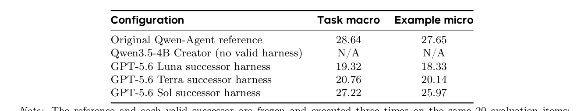
Table 2 RQ3: research performance on the hidden evaluation set for the fixed Qwen-Agent reference and successor harnesses. All executable harnesses use Qwen3.5-4B as the runtime model.
Answer to RQ3. One-step harness evolution can produce executable and behaviorally distinct successor harnesses, but all three valid successors remain numerically below Qwen-Agent. Their trajectories expose bottlenecks in validation diversity and output integrity: in this one-step, single-goal setting, agents complete the edit–test loop without improving mean hidden-set performance over the reference harness.
对 RQ3 的回答。一步式 harness 进化能够产出可执行且行为上有区别的后继 harness，但全部三个有效后继在数值上仍低于 Qwen-Agent。它们的轨迹暴露出验证多样性与输出完整性两方面的瓶颈：在这一步式、单目标设置中，智能体完成了编辑—测试回路，却未能在隐藏集平均性能上超过参考 harness。
5Related Work相关工作
Self-training and self-evolution methods. Self-evolution methods let models construct parts of their own learning signal. STaR [31] fine-tunes on self-generated rationales that yield correct answers; ReST-EM [22] iterates sampling, reward filtering, and retraining; Self-Rewarding LM [30] uses the model as judge; and SPIN [5] learns through self-play. R-Zero [11] and Absolute Zero Reasoner [35] further reduce dependence on external data by posing, solving, and refining problems, while SEAL [37] reinforces model-generated self-edits according to downstream gains. In all cases, the model helps generate data, rewards, tasks, or edits, but progress is still operationalized by a concrete signal such as correctness, reward, self-play outcome, or task gain. Aspire is complementary: it introduces no new training algorithm, but tests whether a model given only a vague goal can construct an effective learning process around it.
自训练与自我进化方法。自我进化方法让模型参与构建自身的学习信号。STaR [31] 在能产出正确答案的自生成推理过程上微调；ReST-EM [22] 迭代执行采样、奖励过滤与再训练；Self-Rewarding LM [30] 用模型充当裁判；SPIN [5] 通过自我博弈学习。R-Zero [11] 与 Absolute Zero Reasoner [35] 通过提出、求解和改进问题进一步降低对外部数据的依赖；SEAL [37] 则依据下游增益强化模型生成的自我编辑。在上述所有工作中，模型虽参与生成数据、奖励、任务或编辑，但进步仍需由正确性、奖励、自我博弈结果或任务增益等具体信号来具体化。Aspire 与之互补：它不引入新的训练算法，而是检验只给定一个模糊目标的模型能否围绕该目标构建有效的学习过程。
Automated post-training and ML-agent benchmarks. PostTrainBench [20] gives an agent a base model, evaluation script, and budget for data filtering, training, and hyperparameter search; LaMDAgent [29] similarly automates iterative post-training pipelines. RSIBench-Data [17] fixes the target model, benchmark, and training stack while agents revise data strategies, and finds that most continued searches finish below their own best checkpoint—a retention failure related to our distinction between candidate progress and retained gain. AI4AI-Bench [6] instead lets agents rewrite a training algorithm under hidden evaluation, yet most submissions do not change how the model learns. PAST-Bench [27] tests whether retained experience improves later personal-agent tasks through the intended save–retrieve–update pathway.
自动化后训练与 ML 智能体基准。PostTrainBench [20] 给智能体一个基座模型、评估脚本以及用于数据过滤、训练与超参数搜索的预算；LaMDAgent [29] 同样自动化迭代式后训练流水线。RSIBench-Data [17] 固定目标模型、基准与训练栈，让智能体修订数据策略，并发现大多数后续搜索最终低于自身最佳检查点——这种保留失败与我们区分“候选进步”与“保留增益”的关注点相关。AI4AI-Bench [6] 则让智能体在隐藏评估下重写训练算法，但大多数提交并未改变模型的学习方式。PAST-Bench [27] 通过预期的保存—检索—更新路径，检验保留的经验能否改进后续的个人智能体任务。
Broader benchmarks such as MLE-bench [2], MLAgentBench [12], and RE-Bench [26] measure ML experi- mentation and AI R&D against quantifiable objectives. AIDE [14], DS-Agent [9], and SELA [7] automate data-science and modeling pipelines; ADAS [10] and Darwin Gödel Machine [32] improve agent systems or code. Hyperagents [33] makes the meta-level modification procedure editable, Frontis-MA1 [28] trains a dedicated meta-evolution agent, and the Red Queen Gödel Machine [13] co-evolves agents and evaluators so the objective changes across epochs.
更广泛的基准如 MLE-bench [2]、MLAgentBench [12] 与 RE-Bench [26] 以可量化的目标度量 ML 实验与 AI 研发能力。AIDE [14]、DS-Agent [9] 与 SELA [7] 自动化数据科学与建模流水线；ADAS [10] 与 Darwin Gödel Machine [32] 改进智能体系统或代码。Hyperagents [33] 将元层面的修改过程本身做成可编辑的；Frontis-MA1 [28] 训练专门的元进化智能体；Red Queen Gödel Machine [13] 则让智能体与评估器共同进化，使目标随轮次变化。
These systems make automated engineering measurable, but generally start from an already operationalized task, score, or evaluator. Complementary shadow evaluations find that frontier agents can complete engineering without advancing an unpublished research question [16], and a survey of 1,250 self-improvement papers identifies research direction-setting as the bottleneck that keeps humans in the loop [3]. This matters when an existing metric saturates or no longer represents the next capability gap. Aspire withholds the downstream task and measures whether an agent can turn a broad direction into learning measured on hidden evaluation
这些系统让自动化工程变得可度量，但通常从已经具体化的任务、分数或评估器出发。互补的影子评估发现，前沿智能体可以在不推进任何未发表研究问题的情况下完成工程任务 [16]；一项对 1,250 篇自我改进论文的综述将“研究方向设定”识别为使人类始终无法退出回路的瓶颈 [3]。当现有指标饱和或不再代表下一个能力缺口时，这一点尤为重要。Aspire 隐藏下游任务，度量智能体能否把一个宽泛方向转化为在隐藏评估上测量的学习
items: RQ1 isolates this goal-side difference within PostTrainBench, and RQ2 studies weight evolution directed by external models or the base model itself.
评估项：RQ1 在 PostTrainBench 内部隔离这一目标侧差异；RQ2 则研究由外部模型或基座模型自身指导的权重进化。
Memory, workflow, and skill evolution. Self-improvement can also occur through memory, tools, and workflows. Evo-Memory [25] studies writing, organizing, and reusing memory; EvoFSM [34] uses interpretable finite-state workflow edits; and SkillLearnBench [36] finds that external feedback supports continual skill gains whereas self-feedback alone can cause recursive drift. HELIX [8] rebuilds a fixed model’s harness, updates the model from verified trajectories, and rebuilds the harness again; Co-Harness [4] alternates validated harness edits with fine-tuning on trajectories produced by the improved harness. RQ3 connects this line to vague-goal learning by asking whether the harness mediating goal interpretation, tool use, memory, and self-evaluation can evolve while runtime weights remain fixed.
记忆、工作流与技能进化。自我改进也可以经由记忆、工具与工作流发生。Evo-Memory [25] 研究记忆的撰写、组织与复用；EvoFSM [34] 使用可解释的有限状态工作流编辑；SkillLearnBench [36] 发现外部反馈支持持续的技能增益，而仅靠自我反馈可能导致递归漂移。HELIX [8] 先重建固定模型的 harness，再从经验证的轨迹更新模型，随后再次重建 harness；Co-Harness [4] 则在经验证的 harness 编辑与基于改进后 harness 所产轨迹的微调之间交替进行。RQ3 将这条研究线与模糊目标学习联系起来：在运行时权重固定的情况下，承担目标解读、工具使用、记忆与自评估的 harness 能否进化。
6Conclusion结论
Modern LLM agents can search for effective ways to improve a specified objective. The next step is to determine what should be learned when no agent-visible task specification or decomposable reward has already operationalized progress. We formalize this problem as vague-goal-driven self-evolution and introduce Aspire, which pairs vague goals with hidden evaluation and auditable trajectories. Across three studies, the RQ1 process slice associates vague-goal prompting with more goal-definition work; self-directed runs produce evaluated checkpoints far more often than retained improvements; and the highest successor-harness mean remains below a fixed reference under unchanged runtime weights. These results show why progress must be judged against the base model rather than only against the previous checkpoint: closing the training loop is not yet the same as closing the capability loop.
现代 LLM 智能体能够搜索改进既定目标的有效方式。下一步则是确定：当尚不存在任何智能体可见的任务规范或可分解奖励来具体化“进步”时，应当学习什么。我们将该问题形式化为模糊目标驱动的自我进化，并提出 Aspire，将模糊目标与隐藏评估、可审计轨迹配对。三项研究表明：RQ1 的过程切片把模糊目标提示与更多的目标定义工作联系起来；自导向运行产出已评估检查点的频率远高于产出保留改进的频率；而在运行时权重不变的情况下，最高的后继 harness 均值仍低于固定参考。这些结果说明，进步必须相对于基座模型评判，而不能只相对于上一个检查点：闭合训练回路尚不等于闭合能力回路。
Our conclusions are bounded by the six goals and the coverage and scoring quality of their expert-authored evaluation items, one canonical adaptive-feedback run per configuration–goal cell, and content-level trace evidence available only under controlled access. Broader goal coverage, repeated runs, refreshed evaluation-set versions, and recursive evolution that controls drift and unrelated capability loss remain important directions for future work.
我们的结论受限于以下因素：六项目标及其专家撰写评估项的覆盖面与打分质量、每个配置—目标格子仅一次规范的自适应反馈运行，以及内容级轨迹证据仅在受控访问下可用。更广的目标覆盖、重复运行、更新版本的评估集，以及能控制漂移与无关能力损失的递归进化，仍是未来工作的重要方向。
7Contributions贡献
Core Contributors Yuhao Wu, Jingyuan Zhang, Jiajun Shi
核心贡献者 Yuhao Wu, Jingyuan Zhang, Jiajun Shi
Contributors Yuxuan Zhang, Xinping Lei, Junting Zhou, Zexuan Wang, Yuchen Wu, Huan Zhou, Duo Wang, Yinzhu Piao, Yongchang Peng, Yunfeng Shi, Jin Chen, Zuo Wang, Jinkai Liu, Jiaheng Liu
贡献者 Yuxuan Zhang, Xinping Lei, Junting Zhou, Zexuan Wang, Yuchen Wu, Huan Zhou, Duo Wang, Yinzhu Piao, Yongchang Peng, Yunfeng Shi, Jin Chen, Zuo Wang, Jinkai Liu, Jiaheng Liu
Corresponding Authors Yuhao Wu (wuyuhao.621@bytedance.com) Wenxuan Zhang (wxzhang@sutd.edu.sg)
通讯作者 Yuhao Wu (wuyuhao.621@bytedance.com) Wenxuan Zhang (wxzhang@sutd.edu.sg)
Shen Yan (sheny@bytedance.com) Wenhao Huang (huang.wenhao@bytedance.com)
Shen Yan (sheny@bytedance.com) Wenhao Huang (huang.wenhao@bytedance.com)
Ge Zhang (gezhang@umich.edu)Ge Zhang (gezhang@umich.edu)
References参考文献
2025. https://www.artificialintelligence-news.com/wp-content/uploads/2025/08/ai_report_2025.pdf, 2025. Industry report.[REF] 原样保留英文文献列表
Liu, Leon Maksin, Tejal Patwardhan, Lilian Weng, and Aleksander Mądry. MLE-bench: Evaluating machine learning agents on machine learning engineering. arXiv preprint arXiv:2410.07095, 2024.
[REF] 原样保留英文文献列表
[5] Zixiang Chen, Yihe Deng, Huizhuo Yuan, Kaixuan Ji, and Quanquan Gu. Self-play fine-tuning converts weak
[REF] 原样保留英文文献列表
[6] Yizhe Chi, Wenyi Li, Deyao Hong, Xiaoqiu Wang, Mingju Gao, Kaisen Yang, Bingxiang He, Youjie Zheng,
[REF] 原样保留英文文献列表
Calvin Xiao, and Qinhuai Na. AI4AI-Bench: Benchmarking LLM agents in algorithmic design for recursive self-improvement, 2026. URL https://arxiv.org/abs/2608.20318.
[REF] 原样保留英文文献列表
Kwok, Ceyao Zhang, Bang Liu, and Chenglin Wu. SELA: Tree-search enhanced LLM agents for automated machine learning. arXiv preprint arXiv:2410.17238, 2024.
[REF] 原样保留英文文献列表
[8] Tianyu Fan and Chao Huang. HELIX: Model-harness co-evolution for recursive self-improvement, 2026. URL
[REF] 原样保留英文文献列表
[9] Siyuan Guo, Cheng Deng, Ying Wen, Hechang Chen, Yi Chang, and Jun Wang. DS-Agent: Automated data
[REF] 原样保留英文文献列表
[14] Zhengyao Jiang, Dominik Schmidt, Dhruv Srikanth, Dixing Xu, Ian Kaplan, Deniss Jacenko, and Yuxiang Wu.
[REF] 原样保留英文文献列表
[15] Di Jin, Eileen Pan, Nassim Oufattole, Wei-Hung Weng, Hanyi Fang, and Peter Szolovits. What disease does
[REF] 原样保留英文文献列表
this patient have? a large-scale open domain question answering dataset from medical exams. arXiv preprint arXiv:2009.13081, 2020.
[REF] 原样保留英文文献列表
[17] Fanqing Meng, Lingxiao Du, Qiguang Chen, Ziqi Zhao, Haocheng Lu, Mengkang Hu, and Michael Qizhe
[REF] 原样保留英文文献列表
Shieh. RSIBench-Data: Benchmarking data-centric research for recursive self-improvement, 2026. URL https: //arxiv.org/abs/2607.25886.
[REF] 原样保留英文文献列表
[18] Gergely Orosz. What are forward deployed engineers, and why are they so in demand? https://newsletter.
[REF] 原样保留英文文献列表
[21] David Rein, Betty Li Hou, Asa Cooper Stickland, Jackson Petty, Richard Yuanzhe Pang, Julien Dirani, Julian
[REF] 原样保留英文文献列表
Michael, and Samuel R. Bowman. GPQA: A graduate-level google-proof q&a benchmark. arXiv preprint arXiv:2311.12022, 2023.
[REF] 原样保留英文文献列表
Harrison, Jaehoon Lee, Kelvin Xu, Aaron Parisi, Abhishek Kumar, Alex Alemi, Alex Rizkowsky, Azade Nova, Ben Adlam, Bernd Bohnet, Gamaleldin Elsayed, Hanie Sedghi, Igor Mordatch, Isabelle Simpson, Izzeddin Gur, Jasper Snoek, Jeffrey Pennington, Jiri Hron, Kathleen Kenealy, Kevin Swersky, Kshiteej Mahajan, Laura Culp, Lechao Xiao, Maxwell L. Bileschi, Noah Constant, Roman Novak, Rosanne Liu, Tris Warkentin, Yundi Qian, Yamini Bansal, Ethan Dyer, Behnam Neyshabur, Jascha Sohl-Dickstein, and Noah Fiedel. Beyond human data: Scaling self-training for problem-solving with language models. Transactions on Machine Learning Research (TMLR); arXiv:2312.06585, 2024.
[REF] 原样保留英文文献列表
[25] Tianxin Wei, Noveen Sachdeva, Benjamin Coleman, Zhankui He, Xuying Ning, Mengting Ai, Yunzhe Li,
[REF] 原样保留英文文献列表
Jingrui He, Ed H. Chi, Chi Wang, Shuo Chen, Fernando Pereira, Wang-Cheng Kang, and Derek Zhiyuan Cheng. Evo-Memory: Benchmarking LLM agent test-time learning with self-evolving memory, 2026. URL https://arxiv.org/abs/2511.20857.
[REF] 原样保留英文文献列表
Josh Clymer, Jai Dhyani, Elena Ericheva, Katharyn Garcia, Brian Goodrich, Nikola Jurkovic, Holden Karnofsky, Megan Kinniment, Aron Lajko, Seraphina Nix, Lucas Sato, William Saunders, Maksym Taran, Ben West, and Elizabeth Barnes. RE-Bench: Evaluating frontier AI R&D capabilities of language model agents against human experts. arXiv preprint arXiv:2411.15114, 2024.
[REF] 原样保留英文文献列表
[27] Shuhan Xue, Zixin Ding, Yichen Shen, Yinjie Wang, Zhenfei Yin, Yingcheng Wu, Yuxin Chen, Mengdi Wang,
[REF] 原样保留英文文献列表
and Ling Yang. PAST-Bench: Benchmarking the foundations of recursive self-improvement in personal agents, 2026. URL https://arxiv.org/abs/2608.04003.
[REF] 原样保留英文文献列表
[28] Junlin Yang, Che Jiang, Yu Fu, Tianwei Luo, Can Ren, Weizhi Wang, Kaikai Zhao, Hongyi Liu, Yuxin Zuo,
[REF] 原样保留英文文献列表
Yuru Wang, Yuchen Fan, Kai Tian, Zhenzhao Yuan, Xiaojian Lin, Li Sheng, Rushi Qiang, Guoli Jia, Xingtai
[REF] 原样保留英文文献列表
Lv, Ermo Hua, Dianqiao Lei, Youbang Sun, Ning Ding, Bowen Zhou, and Kaiyan Zhang. Frontis-MA1: Training an AI4AI model towards recursive self-improvement in machine learning engineering, 2026. URL https://arxiv.org/abs/2607.28568.
[REF] 原样保留英文文献列表
[30] Weizhe Yuan, Richard Yuanzhe Pang, Kyunghyun Cho, Xian Li, Sainbayar Sukhbaatar, Jing Xu, and Jason
[REF] 原样保留英文文献列表
[32] Jenny Zhang, Shengran Hu, Cong Lu, Robert Lange, and Jeff Clune. Darwin Gödel Machine: Open-ended
[REF] 原样保留英文文献列表
[35] Andrew Zhao, Yiran Wu, Yang Yue, Tong Wu, Quentin Xu, Yang Yue, Matthieu Lin, Shenzhi Wang, Qingyun
[REF] 原样保留英文文献列表
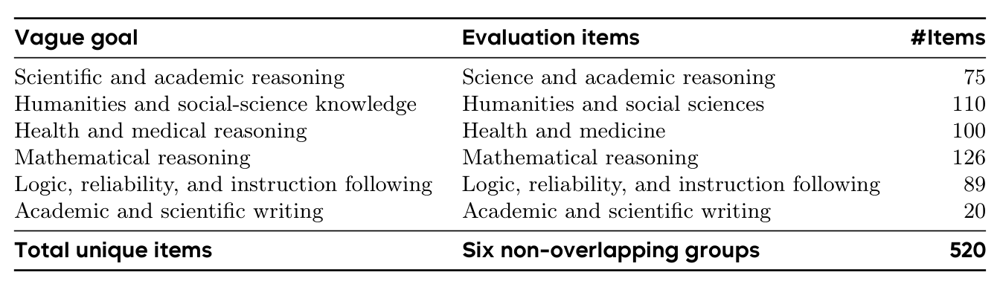
Table 3 The six vague goals and their corresponding evaluation items. All 520 top-level items are newly authored by domain experts.
Appendix附录
A Benchmark Construction and Experimental Contracts附录 A 基准构建与实验契约
A.1 Goal and Evaluation-Set StatisticsA.1 目标与评估集统计
The benchmark defines six vague goals, each paired with one mutually exclusive group of items in the hidden evaluation set (Table 3). The adaptive-feedback protocol evaluates all six goals. Logic, reliability, and instruction following form one composite goal in the current release; we do not treat its three components as separately identified goals.
该基准定义了六项模糊目标，每项目标与隐藏评估集中一个互斥的评估项组配对（表 3）。自适应反馈协议评估全部六项目标。逻辑、可靠性与指令遵循在当前版本中构成一个复合目标；我们不将其三个组成部分视为可分别识别的目标。
The items for the academic and scientific writing goal comprise 20 top-level task bundles, counted as 20 evaluation items. Its harness evaluator may produce multiple scored examples within a task, which is why RQ3 reports both task-macro and example-micro aggregation.
学术与科学写作目标的评估项由 20 个顶层任务包组成，计为 20 个评估项。其 harness 评估器可能在一个任务内产生多个被打分的样例，这正是 RQ3 同时报告 task-macro 与 example-micro 两种聚合的原因。
A.2 Contamination-Control DetailsA.2 污染控制细节
Contamination control begins at authorship. Domain experts write each item from scratch, while named public benchmarks serve only as task-archetype and difficulty references. Before freezing a version of the hidden evaluation set, the pipeline removes exact and semantic duplicates within and across reporting groups and audits overlap against the reference benchmarks. Dataset registration then applies a second exact and semantic overlap gate against the hidden evaluation set, and detected matches are rejected before data can enter SFT, GRPO, or continual-pretraining during a campaign.
污染控制从撰写环节开始。领域专家从零撰写每个评估项，具名的公共基准仅充当任务原型与难度参考。在冻结隐藏评估集的某个版本之前，流水线会在各报告组内部及跨组移除精确与语义重复项，并对照参考基准审计重叠。数据集注册环节随后针对隐藏评估集施加第二道精确与语义重叠闸门，检测到的匹配项会在数据进入 SFT、GRPO 或持续预训练之前被拒绝。
Seed-2.0, GPT-5.2, and Gemini-3 independently answer each candidate under a shared blind-screen protocol. L0–L3 denote the number of models that fail; timeouts and service errors are retried rather than counted as failures. This screen calibrates difficulty and is separate from the authorship and overlap audits. After review, scorer binding, and local end-to-end validation, the hidden evaluation set is frozen under a manifest and SHA-256. Corrections create a new version; a running campaign continues to use the version fixed at creation.
Seed-2.0、GPT-5.2 与 Gemini-3 在共享的盲筛协议下独立回答每个候选项。L0–L3 表示未通过的模型数量；超时与服务错误会被重试而不计为失败。该筛选用途是校准难度，与作者审查和重叠审计相互独立。经过评审、打分器绑定与本地端到端验证后，隐藏评估集在清单与 SHA-256 下冻结。更正会创建新版本；运行中的 campaign 继续使用创建时固定的版本。
A.3 Prompt ContractsA.3 提示契约
Prompts are rendered from a versioned setting profile rather than written ad hoc for each run. A vague-goal prompt contains a natural-language capability goal, the model being trained, the action contract, budgets, and the rule that the hidden evaluation set returns aggregate scores only. It does not reveal evaluation item content, answers, rubrics, goal-routing identifiers, or per-item feedback. For example, the mathematical goal asks the agent to improve difficult multi-step reasoning, precise calculation, and clear justification without naming the evaluation items. An explicit-task contract additionally discloses the approved task format, difficulty anchor, metric, and success criterion, while preserving the same content boundary. Every campaign binds its setting identifier, prompt-profile version, rendered prompt SHA-256, and experiment identity. These bindings are checked on
提示由一个带版本的设置档案渲染而来，而非为每次运行临时编写。模糊目标提示包含一个自然语言能力目标、被训练的模型、动作契约、预算，以及隐藏评估集只返回聚合分数的规则；它不透露评估项内容、答案、评分细则、目标路由标识符或逐项反馈。例如，数学目标要求智能体改进困难的多步推理、精确计算与清晰的论证，但不点名任何评估项。显式任务契约则会额外披露已批准的任务格式、难度锚点、指标与成功标准，同时保持相同的内容边界。每个 campaign 绑定其设置标识符、提示档案版本、渲染后提示的 SHA-256 与实验身份。这些绑定会在
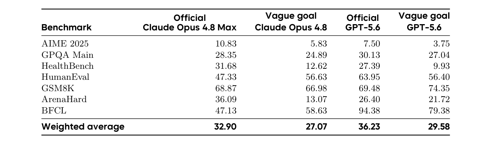
Table 4 PostTrainBench score comparison for RQ1. Values are percentages; the weighted average uses the official benchmark weights.
creation and recovery so that a vague-goal run cannot silently resume under an explicit-task contract or a different prompt version.
创建与恢复时接受检查，从而使模糊目标运行无法在显式任务契约或不同提示版本下被静默恢复。
B Complete RQ1 Score and Trajectory Accounting
B 完整的 RQ1 分数与轨迹核算
Score comparison. Table 4 gives the exact values visualized in Figure 4(a). Official scores are system-level PostTrainBench references; the vague-goal columns are our results. They share the benchmark definition and aggregation weights, but are not treated as prompt-only causal pairs.
分数比较。表 4 给出图 4(a) 可视化的精确数值。官方分数是系统级的 PostTrainBench 参考；模糊目标列是我们的结果。二者共享基准定义与聚合权重，但不被视为仅由提示造成的因果配对。
Matched process accounting. The process comparison pairs explicit-task and vague-goal runs with the same decision model, base model, benchmark leaf, and trial index. We exclude anti-cheat hits and run pairs that return only the fallback base. The matched Claude Opus 4.8 comparison contains 48 matched run pairs. Each trial occupies one H20 sandbox GPU for at most 10 hours. We partition occupancy into decision-model waiting time, during which the sandbox GPU is idle, and active time used by the remaining workflow.
匹配过程核算。过程比较将显式任务与模糊目标运行按相同的决策模型、基座模型、基准叶节点与试验索引配对。我们排除反作弊命中以及只返回回退基座的运行对。匹配的 Claude Opus 4.8 比较包含 48 个匹配运行对。每个试验占用一块 H20 沙箱 GPU 至多 10 小时。我们将占用时间划分为决策模型等待时间（其间沙箱 GPU 空闲）与其余工作流使用的活跃时间。
For Claude Opus 4.8, vague-goal prompting is associated with 2,109 more seconds of decision-model thinking and 0.61 more hours of idle time per matched run pair, alongside 1.27 fewer active hours. The corresponding absolute means move from 0.6 to 1.2 idle hours and from 8.0 to 6.7 active hours. Figure 4(b) converts these deltas to minutes for a common visual scale; displayed values use the unrounded measurements.
对 Claude Opus 4.8 而言，模糊目标提示对应每个匹配运行对多出 2,109 秒的决策模型思考时间与 0.61 小时的空闲时间，同时活跃时间减少 1.27 小时。相应的绝对均值从 0.6 小时空闲变为 1.2 小时空闲，从 8.0 小时活跃变为 6.7 小时活跃。图 4(b) 为获得共同的视觉尺度而把这些差值转换为分钟；所显示的数值使用未取整的测量值。
Behavioral normalization. Narrative traces differ substantially in length across conditions, so action mentions are normalized per 10,000 characters and interpreted only when hit rate and density move consistently. Under vague-goal prompting, the density of reading task definitions rises by 2.98×, inspecting evaluation scripts by 2.39×, and low-rank adaptation (LoRA)/parameter-efficient fine-tuning (PEFT) use by 3.09×. LoRA appears in 89.8% of vague-goal runs versus 24.1% of matched explicit-task runs; 33 matched run pairs switch from not using LoRA to using it, with no switch in the opposite direction. We separately validate the Claude Opus 4.8 pattern with trace-level tool calls on the six matched settings
行为归一化。不同条件下的叙述轨迹长度差异很大，因此动作提及按每 10,000 字符归一化，且只在命中率与密度同向变化时才被解读。在模糊目标提示下，阅读任务定义的密度上升 2.98×，查看评估脚本上升 2.39×，低秩适应（LoRA）/参数高效微调（PEFT）的使用上升 3.09×。LoRA 出现在 89.8% 的模糊目标运行中，而匹配显式任务运行中仅为 24.1%；33 个匹配运行对从不使用 LoRA 变为使用，没有出现反方向的切换。我们在两种轨迹导出共享的六个匹配设置
shared by both trace exports (21 trajectories). Mean action count changes from 188.5 to 179.2 per trajectory. We therefore interpret the longer vague-goal narrative as additional deliberation, not as evidence that the agent
上用轨迹级工具调用单独验证 Claude Opus 4.8 模式（21 条轨迹）。平均动作计数从每条轨迹 188.5 变为 179.2。因此，我们把更长的模糊目标叙述解读为额外的斟酌，而非智能体
executed more work. Training starts are counted only from concrete launch commands (e.g., accelerate launch or torchrun); broad keyword matches over train and sft are not used as action evidence. These trace-level calls are broader than the accepted controller actions ar,j defined in Section 3.1.
执行了更多工作的证据。训练启动只从具体的启动命令（如 accelerate launch 或 torchrun）计数；对 train 与 sft 的宽泛关键词匹配不被用作动作证据。这些轨迹级调用的范围比第 3.1 节定义的被接受控制器动作 ar,j 更宽。
Official-trajectory comparison. We apply the same trajectory parser to 112 released official traces, 56 each for the official Claude Opus 4.8 Max and GPT-5.6 Sol systems. Vague-goal Claude Opus 4.8 averages 3.54 evaluations and 6.17 training starts per trajectory; official Claude Opus 4.8 Max averages 2.89 and 5.14, while official GPT-5.6 averages 39.21 and 14.91. These correspond to 0.57, 0.56, and 2.63 evaluations per training start. Official Claude Opus 4.8 Max additionally records 165,851 thinking characters per trajectory,
官方轨迹比较。我们对 112 条已发布的官方轨迹应用同一轨迹解析器，官方 Claude Opus 4.8 Max 与 GPT-5.6 Sol 系统各 56 条。模糊目标 Claude Opus 4.8 平均每条轨迹 3.54 次评估与 6.17 次训练启动；官方 Claude Opus 4.8 Max 平均为 2.89 与 5.14，官方 GPT-5.6 平均为 39.21 与 14.91。对应的每次训练启动评估次数分别为 0.57、0.56 与 2.63。官方 Claude Opus 4.8 Max 还记录每条轨迹 165,851 个思考字符，
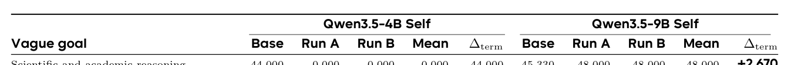
Table 5 Final-only protocol final-checkpoint results. The terminal delta ∆term compares Mean with the base score. Values are raw evaluation scores before rollback; Mean and ∆term are computed from unrounded scores before display rounding.
whereas official GPT-5.6 records 30,895, supporting the deep-deliberation and high-frequency-experimentation interpretations in the main text.
而官方 GPT-5.6 记录 30,895 个，这支持正文中“深度斟酌”与“高频实验”两种解读。
C Complete RQ2 Results and Experimental Protocol
C 完整的 RQ2 结果与实验协议
C.1 Outcome Accounting and RollbackC.1 结果核算与回滚
Only checkpoints whose parent, registered data, admitted update, and published artifacts are verified enter the evaluated lineage. The campaign fixes its hidden evaluation set, scorer or judge, decoding and aggregation rules, query allowance, eligibility requirements, terminal selector, and tie-breaking order before execution. An evaluated checkpoint is any verified candidate with a durable score. An eligible checkpoint additionally satisfies the predeclared provenance, exploration, completion, and terminal-record requirements. The selected checkpoint is the highest-scoring eligible checkpoint under the fixed selector and tie-breaking order. The retained model uses that checkpoint only when it exceeds the base score; otherwise the controller rolls back to
只有父检查点、注册数据、被接受的更新与已发布产物均通过验证的检查点，才进入被评估的谱系。campaign 在执行前固定其隐藏评估集、打分器或裁判、解码与聚合规则、查询额度、资格要求、终结选择器与平局裁决顺序。已评估检查点指任何拥有持久分数的经验证候选。合格检查点还须满足预先声明的溯源、探索、完成与终结记录要求。被选检查点是在固定选择器与平局裁决顺序下分数最高的合格检查点。被保留模型仅在该检查点超过基座分数时使用它；否则控制器回滚至
the base. We report the best evaluated, selected, and retained outcomes separately because a high intermediate score may come from an incomplete run, while a nonnegative retained score may reflect rollback rather than learning. RQ3 instead freezes each harness before research evaluation, compares it with a fixed-weight reference, and withholds the score from the creator.
基座。我们分别报告最佳已评估、被选与被保留三种结果：高的中间分数可能来自一次不完整的运行，而非负的保留分数可能反映的是回滚而非学习。RQ3 则改为在研究评估之前冻结每个 harness，与固定权重的参考比较，并且不把分数返回给创建者。
C.2 Feedback and Submission ProtocolC.2 反馈与提交协议
Vague-goal and explicit-task configurations use separate versioned settings and cannot submit checkpoints across experiments. Training uses registered data and a controller-resolved parent, and only a completely published checkpoint from the current lineage can be validated or submitted. The agent’s own validation data are agent-visible and do not consume queries to the hidden evaluation set. The adaptive-feedback protocol permits repeated aggregate-score queries on the same goal-specific evaluation items within its recorded allowance. The final-only protocol returns no intermediate score and accepts one final-checkpoint evaluation per run. Invalid or duplicate requests do not consume a query; an accepted reservation remains counted if a later deployment or evaluator stage fails. No protocol returns hidden evaluation items, answers, candidate outputs, rubrics, or judge reasoning.
模糊目标与显式任务配置使用相互独立的带版本设置，不能跨实验提交检查点。训练使用注册数据与控制器解析的父检查点；只有来自当前谱系且完全发布的检查点才能被验证或提交。智能体自己的验证数据对智能体可见，且不消耗对隐藏评估集的查询。自适应反馈协议允许在其记录的额度内，对同一目标的专属评估项重复进行聚合分数查询。final-only 协议不返回任何中间分数，且每次运行只接受一次最终检查点评估。无效或重复的请求不消耗查询；若后续部署或评估器阶段失败，已接受的预约仍被计入。没有任何协议返回隐藏评估项、答案、候选输出、评分细则或裁判推理。
C.3 Final-Only Protocol: Vague-Goal Weight Evolution
C.3 final-only 协议：模糊目标权重进化
The final-only protocol crosses Qwen3.5-4B Self and Qwen3.5-9B Self with six goals, each with separately executed Run A and Run B, for 24 runs in total (Table 5). Each run may launch multiple training jobs within 40 GPU-hours but may submit only one final checkpoint for evaluation on the hidden evaluation set. Mean is the arithmetic mean of the two final-checkpoint scores, not best-of-two or two samples from one checkpoint. The evaluator runs as a local process, checkpoint inference uses no-thinking mode, and gemini-3.5-flash judges under an 8,192-token thinking budget and a 10% fail-closed threshold. Checkpoint deployment uses eight GPUs and is cleaned up after evaluation.
final-only 协议将 Qwen3.5-4B Self 与 Qwen3.5-9B Self 同六项目标交叉，每项目标都有独立执行的 Run A 与 Run B，共 24 次运行（表 5）。每次运行可以在 40 GPU 小时内启动多个训练作业，但只能提交一个最终检查点用于在隐藏评估集上评估。Mean 是两个最终检查点分数的算术平均，而非两次中的最优，也不是来自同一检查点的两个样本。评估器以本地进程运行，检查点推理使用 no-thinking 模式，gemini-3.5-flash 在 8,192 token 思考预算与 10% fail-closed 阈值下担任裁判。检查点部署使用八块 GPU，并在评估后清理。
All 24 submitted final checkpoints complete evaluation on the first judge attempt; all 2,080 item outputs are nonempty and no item reports an evaluation error. At the model–goal reporting level, Qwen3.5-4B has 0/6 Mean outcomes above its base score and Qwen3.5-9B has 1/6. At the individual-run level, the corresponding
全部 24 个提交的最终检查点都在裁判的首次尝试中完成评估；全部 2,080 个评估项输出均非空，没有任何评估项报告评估错误。在模型—目标报告层面，Qwen3.5-4B 有 0/6 个 Mean 结果高于其基座分数，Qwen3.5-9B 有 1/6。在单次运行层面，相应的
counts are 0/12 and 3/12. Scientific and academic reasoning is the only positive Mean: its two runs each score 48.00 and answer 36/75 items correctly, yet only 26 correct items overlap and 20/75 items flip which run is correct. The agreement therefore concerns aggregate direction on the same 75 evaluation items, not item-level stability or transfer beyond those items. The raw final-checkpoint macro average falls from 35.735 to 18.609 for 4B and from 39.010 to 25.640 for 9B; rollback leaves the retained model equal to the base model in 21/24 runs.
计数为 0/12 与 3/12。科学与学术推理是唯一的正向 Mean：其两次运行各得 48.00 并答对 36/75 个评估项，但答对项只有 26 个重叠，且有 20/75 个评估项在两次运行之间翻转了答对与否。因此，这种一致性只涉及同一批 75 个评估项上的总体方向，而非逐项稳定性或向这些评估项之外的迁移。原始最终检查点宏平均从 4B 的 35.735 降至 18.609，从 9B 的 39.010 降至 25.640；回滚使 21/24 次运行中的被保留模型等于基座模型。
Five submitted checkpoints use numeric-label MMLU SFT. Their selected training snapshots contain 21,000 single-digit targets, and all 279 corresponding evaluation outputs are also single digits; the five final-checkpoint scores are 0, 0, 0, 6.141, and 0. Three long-tail runs further illustrate long blind training lineages: 4B Run B for mathematics launches 20 jobs and spends 26.570 GPU-hours before submitting a final checkpoint that scores 0.159; 9B Run B for mathematics launches 17 jobs and spends 32.286 GPU-hours before scoring 2.540; and 9B Run B for writing launches 16 jobs and spends 30.530 GPU-hours before scoring 0. Because only final checkpoints are evaluated, these results neither identify the best intermediate checkpoint nor establish a monotonic degradation path.
五个提交的检查点使用数字标签 MMLU SFT。它们被选中的训练快照包含 21,000 个个位数目标，全部 279 个对应评估输出也都是个位数；五个最终检查点分数分别为 0、0、0、6.141 和 0。三个长尾运行进一步展示了漫长的盲训练谱系：4B 数学的 Run B 启动 20 个作业并花费 26.570 GPU 小时，最终提交了一个得分 0.159 的最终检查点；9B 数学的 Run B 启动 17 个作业并花费 32.286 GPU 小时后得 2.540；9B 写作的 Run B 启动 16 个作业并花费 30.530 GPU 小时后得 0。由于只有最终检查点被评估，这些结果既不能识别最佳的中间检查点，也不能确立一条单调退化路径。
C.4 Adaptive-Feedback Protocol ResultsC.4 自适应反馈协议结果
Of the 30 configuration–goal cells in the adaptive-feedback protocol, 28/30 produce at least one evaluated checkpoint. Only two configuration–goal cells have a best evaluated checkpoint whose score exceeds the base score: Qwen3.5-4B Self science rises from 44.00 to 45.33, while Terra optimizing Qwen3.5-4B mathematics rises from 17.86 to 20.10. The Terra mathematics checkpoint is the only retained improvement under the complete-run selection rule. Among the 22 configuration–goal cells with at least two evaluated checkpoints, 62 consecutive transitions comprise 28 increases, 13 ties, and 21 decreases. Later search beats the first evaluated checkpoint in 14/22 configuration–goal cells, but only the Terra mathematics trajectory yields an eligible checkpoint whose score exceeds the base score. These are descriptive cell-level results from one run per configuration–goal cell.
在自适应反馈协议的 30 个配置—目标格子中，28/30 产出了至少一个已评估检查点。只有两个配置—目标格子的最佳已评估检查点分数超过基座分数：Qwen3.5-4B Self 的科学从 44.00 升至 45.33；Terra 优化 Qwen3.5-4B 数学从 17.86 升至 20.10。在完整运行选择规则下，Terra 数学检查点是唯一被保留的改进。在拥有至少两个已评估检查点的 22 个配置—目标格子中，62 次连续转移包含 28 次上升、13 次持平与 21 次下降。后续搜索在 14/22 个配置—目标格子中优于第一个已评估检查点，但只有 Terra 数学轨迹产出了分数超过基座分数的合格检查点。这些是每个配置—目标格子一次运行的描述性格子级结果。
Decision-model search profiles. Eight of the 22 multi-checkpoint trajectories are non-decreasing. Luna uses SFT in 24/28 registered plans and continues from the latest checkpoint in 21/28, producing 22 evaluated checkpoints with 89.57 settled GPU-hours. Terra registers 33 plans, including six GRPO updates, and produces 19 evaluated checkpoints with 91.73 GPU-hours. Its retained mathematics score of 20.10 is followed by 2.78 and then 18.17. Sol registers 40 plans, 36 evaluation attempts, 23 search actions, and 12 distinct dataset names; it produces 33 evaluated checkpoints with 76.56 GPU-hours, but none exceeds the corresponding base score.
决策模型搜索画像。22 条多检查点轨迹中有 8 条单调不减。Luna 在 24/28 个注册计划中使用 SFT，并在 21/28 中从最新检查点继续，产出 22 个已评估检查点、消耗 89.57 个已结算 GPU 小时。Terra 注册 33 个计划，包括 6 次 GRPO 更新，产出 19 个已评估检查点、消耗 91.73 个 GPU 小时；其被保留的数学分数 20.10 之后是 2.78，随后恢复到 18.17。Sol 注册 40 个计划、36 次评估尝试、23 个搜索动作与 12 个不同数据集名称；它产出 33 个已评估检查点、消耗 76.56 个 GPU 小时，但没有一个超过对应的基座分数。
Self-directed proxy and update choices. Qwen3.5-4B Self imports GSM8K or Hendrycks mathematics data in 30/32 dataset-import events, including events for science, logic, and writing; Qwen3.5-9B Self uses mathematics data in 11/15 imports but is more goal-specific outside mathematics. Their update choices differ as well: Qwen3.5-4B Self uses GRPO in 4/12 plans, whereas Qwen3.5-9B Self uses SFT in 9/11. The two configurations generate 20,396 and 28,135 agent events but register only 12 and 11 training plans, respectively. These counts describe search allocation and do not by themselves establish why a checkpoint gains or loses capability.
自导向的代理与更新选择。Qwen3.5-4B Self 在 30/32 次数据集导入事件中使用 GSM8K 或 Hendrycks 数学数据，其中包括以科学、逻辑和写作为目标的事件；Qwen3.5-9B Self 在 11/15 次导入中使用数学数据，但在数学之外更具目标针对性。二者的更新选择也不同：Qwen3.5-4B Self 在 4/12 个计划中使用 GRPO，而 Qwen3.5-9B Self 在 9/11 中使用 SFT。两种配置分别产生 20,396 与 28,135 个智能体事件，却只分别注册 12 与 11 个训练计划。这些计数描述的是搜索分配，本身并不能确立某个检查点为何获得或失去能力。
C.5 Trajectory Evidence BoundaryC.5 轨迹证据边界
The portable adaptive-feedback artifact contains counts, timestamps, source hashes, resource use, submissions, and selection records, but excludes hidden evaluation items, raw model messages, command outputs, and per- item judge reasons. Deterministic extraction covers every configuration–goal cell, reading 63,973 agent, 1,196 training, and 2,194 phase events and recovering 124 training plans and 95 candidate-evaluation attempts. Two independent reviews check the task-level interpretation. The resulting claims therefore concern exploration, checkpoint progression, selection, and rollback; item-level causal analysis requires controlled access to the content-bearing traces.
可移植的自适应反馈工件包含计数、时间戳、来源哈希、资源使用、提交与选择记录，但不包含隐藏评估项、原始模型消息、命令输出与逐项裁判理由。确定性抽取覆盖每个配置—目标格子，读取 63,973 个智能体事件、1,196 个训练事件与 2,194 个阶段事件，并恢复 124 个训练计划与 95 次候选评估尝试。任务级解读经过两项独立审查。因此，所得结论涉及探索、检查点推进、选择与回滚；逐项因果分析则需要对承载内容的轨迹进行受控访问。
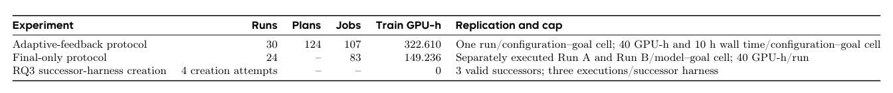
Table 6 Resource accounting for RQ2–RQ3. Training GPU-hours exclude inference, judging, deployment, and idle controller time.表 6 汇总了运行、计划、作业与已结算的训练 GPU 小时。自适应反馈协议是一个完整的 5×6 设计，但不是多种子估计。final-only 协议对 Qwen3.5-4B 使用 59.269 训练 GPU 小时，对 Qwen3.5-9B 使用 89.967。RQ3 不更新权重；因此创建者模型与运行时推理不计入训练 GPU 台账。
C.6 Compute and Resource AccountingC.6 计算与资源核算
D RQ3 Creator-Trajectory Case AnalysisD RQ3 创建者轨迹案例分析
Scope and evidence boundary. This content-level analysis covers the three valid GPT-5.6 creator trajectories and one inspected execution on the hidden evaluation set for each frozen successor harness. The creator sees only its own validation data; evaluation items and scores are not returned. Table 2 reports means over three executions, whereas the task-level examples below diagnose mechanisms in one inspected execution. They are therefore case evidence, not additional repetitions or a stable ranking of creator models.
范围与证据边界。这一内容级分析覆盖三条有效的 GPT-5.6 创建者轨迹，以及每个冻结后继 harness 在隐藏评估集上的一次被检查执行。创建者只能看到自己的验证数据；评估项与分数不会返回。表 2 报告三次执行的均值，而下文的任务级案例诊断的是单次被检查执行中的机制。因此它们属于案例证据，而非额外的重复实验或创建者模型的稳定排名。
Luna: early stopping on a narrow validation proxy. Luna evaluates H0 on one validation prompt with an eight-item checklist. After a 7/8 result, it adds a fixed five-part template covering the research question, design, analysis, risks, and limitations. The edited harness reaches 8/8 on that prompt and two similar prompts, and Luna stops after approximately 40 minutes. In the inspected execution on the hidden evaluation set, this template improves structural completeness but reframes direct questions about mechanisms, formulas, parameters, or engineering details as study-design problems rather than supplying the requested technical content.
Luna：在狭隘验证代理上提前停止。Luna 用一个八项清单在一个验证提示上评估 H0。在得到 7/8 的结果后，它添加了一个覆盖研究问题、设计、分析、风险与局限的固定五段模板。编辑后的 harness 在该提示与两个类似提示上达到 8/8，Luna 随即于约 40 分钟后停止。在被检查的隐藏评估集执行中，该模板提升了结构完整性，但把对机制、公式、参数或工程细节的直接提问改写为研究设计问题，而非提供所请求的技术内容。
Terra: reviewer reversion without a final-answer invariant. Terra removes an initial two-pass reviewer after it invents unsupported significance results and effect sizes, then adds narrower safeguards for assumptions, model calls, logging, and calculator use. It nevertheless omits a final-answer invariant: when the post-calculator response is empty, the harness submits the pre-tool fragment. Two inspected tasks therefore return partial drafts of 342 and 520 characters, with scores falling from 75.00 and 52.33 under H0 to 2.57 and 2.91. These cases account for approximately 70% of the aggregate decline in that execution.
Terra：撤销审查器但缺少最终答案不变量。Terra 在一个两遍审查器编造无依据的显著性结果与效应量后将其移除，随后为假设、模型调用、日志与计算器使用添加了更窄的保障。然而它遗漏了一条最终答案不变量：当计算器调用之后的回答为空时，harness 会提交工具调用前的片段。因此，两个被检查任务返回了 342 与 520 字符的部分草稿，分数从 H0 下的 75.00 与 52.33 跌至 2.57 与 2.91。这些案例约占该执行总体下降的 70%。
Sol: broader testing followed by conservative selection. Across 3 hours 11 minutes and four validation task types, Sol tests prompt length, tool-call recovery, disabled tools, and a review pass, while correcting one erroneous local reference answer. It rejects locally stronger variants for latency, repeated calls, fabricated numbers, or scorer misses. The selected harness restores the original Qwen-Agent policy and adds a completeness check for empty final responses. The check never triggers on the 20 inspected evaluation items, supporting improved failure semantics rather than a score gain.
Sol：更广泛的测试与保守的选择。在 3 小时 11 分钟与四类验证任务中，Sol 测试了提示长度、工具调用恢复、禁用工具与一遍审查，同时修正了一个错误的本地参考答案。它因延迟、重复调用、捏造数字或打分器遗漏而拒绝本地更强的变体。被选中的 harness 恢复了原始 Qwen-Agent 策略，并添加了针对空最终回答的完整性检查。该检查在 20 个被检查评估项上从未触发，这支持“失败语义得到改进、而非分数提升”的结论。